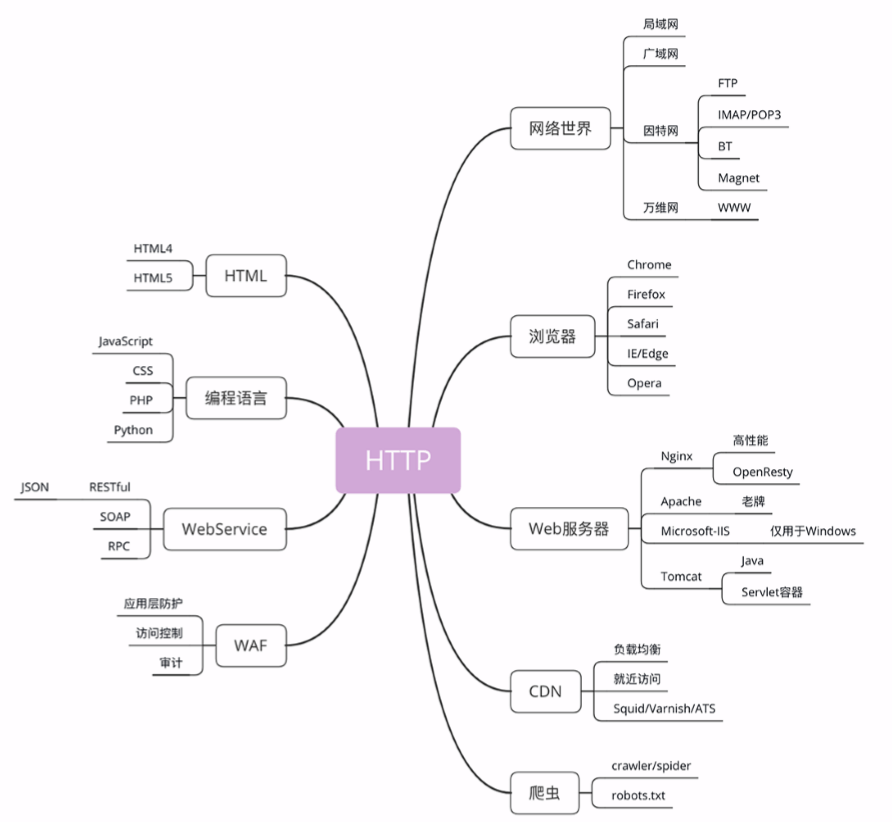
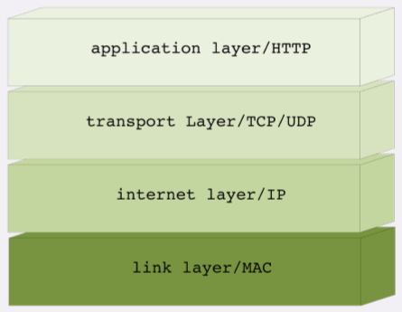
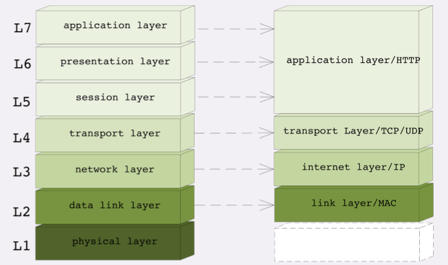
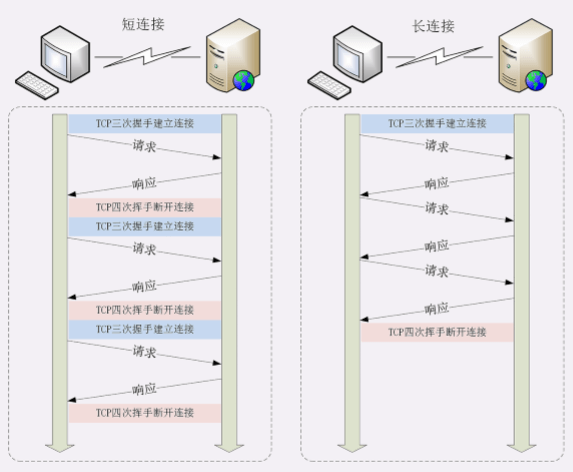
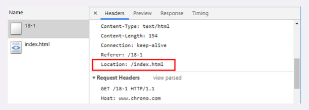
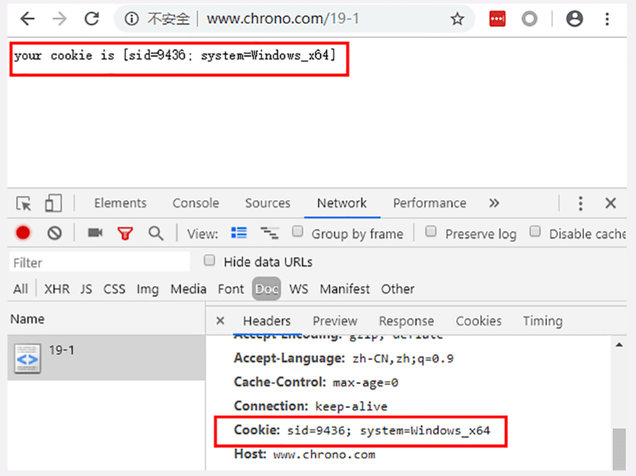
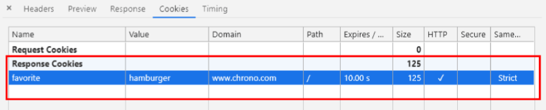
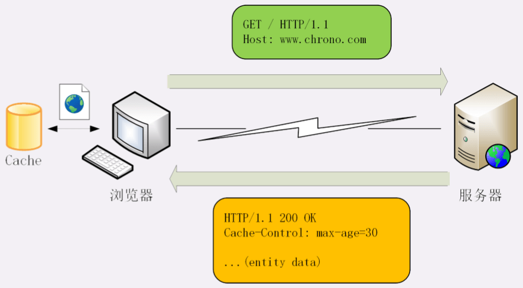
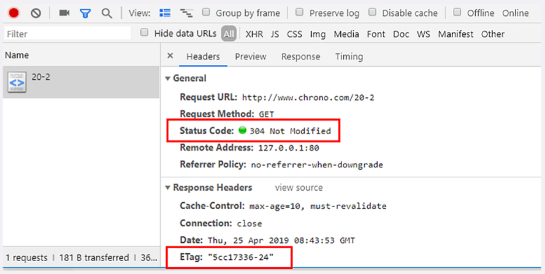

- 一 开篇词
- 二 破冰篇
- 三 基础篇
- 四 进阶篇
一 开篇词
0丨面试啊面试
- 用TCP实现http
- 你是怎么理解 HTTP 字面上的“超文本”和“传输协议”的？
- 能否谈一下你对 HTTP 的认识？越多越好。
- HTTP 有什么特点？有什么优点和缺点？
- HTTP 下层都有哪些协议？是如何工作的？
- 域名解析过程，CDN调度过程
- 关于请求方法还有两个面试时有可能会问到、比较重要的概念：安全与幂等
二 破冰篇
1丨http的前世今生
1-1 几个概念
- URI：即统一资源标识符，作为互联网上资源的唯一身份；
- HTML：即超文本标记语言，描述超文本文档；
- HTTP：即超文本传输协议，用来传输超文本；
1-2 变更
- HTTP/1.0相比0.9的变更点：
- 增加了HEAD、POST等新方法；
- 增加了响应状态码，标记可能的错误原因；
- 引入了协议版本号概念；
- 引入了HTTP Header（头部）的概念，让HTTP处理请求和响应更加灵活；
- 传输的数据不再仅限于文本。
- HTTP/1.1相比1.0的主要变更点：
- 增加了PUT、DELETE等新的方法（这些可以用在restful应用里，表示各种对资源的操作）；
- 增加了缓存管理和控制；
- 明确了连接管理，允许持久连接；
- 允许响应数据分块（chunked），利于传输大文件；
- 强制要求Host头，让互联网主机托管成为可能。
- HTTP/1.1的缺点是连接慢，无法跟上迅猛发展的互联网。
- HTTP/2的制定充分考虑了现今互联网的现状：宽带、移动、不安全，在高度兼容1.1的同时在性能改善方面做了很大努力，主要的特点有：
- 二进制协议，不再是纯文本，如HTTP/1.1 中的 application/octet-stream 和 multipart/form-data ；
- 可发起多个请求，废弃了1.1里的管道；
- 使用专用算法压缩头部，减少数据传输量；
- 允许服务器主动向客户端推送数据；
- 增强了安全性，“事实上”要求加密通信。
- HTTP/3还没正式发布。
1-3 小结
- HTTP协议始于三十年前蒂姆·伯纳斯-李的一篇论文；
- HTTP/0.9是个简单的文本协议，只能获取文本资源；
- HTTP/1.0确立了大部分现在使用的技术，但它不是正是标准；
- HTTP/1.1是目前互联网上使用最广泛的协议，功能也非常完善；
- HTTP/2基于Google的SPDY协议，注重性能改善，但还未普及；
- HTTP/3基于Google的QUIC协议，是将来的发展方向。
1-4 课下作业
- 你认为推动HTTP发展的原动力是什么？
用户需求推动技术发展
在实际商业应用、竞争和实践中反复打磨，让协议标准适应 不断发展变化的实际业务问题，而不是让日渐庞大复杂的业务去适应受限于特定时空因素 的标准。 标准的诞生和发展一方面是基于具体业务需要和技术发展，另一方面是为了统一游戏规则 - 你是怎么理解HTTP（超文本传输协议）的？
HTTP 的本质是 P（Protocol），即一个协议，定义了服务端与客户端数据交互的标 准。
1-5 延伸知识
- http 安全知识方面的内容：比如host 头攻击、缓速攻击等。
- http的优点是灵活方便，缺点是通信成本略高，每家公司选择通信协议都有自己的考虑，安全是因素之一，但真正的原因我们外人是不知道的。
- 那怎么看我们使用的是哪一个？
看地址栏的uri，可以分辨http和https，具体的版本号就要用Chrome的开发者工具了。
2丨http是什么以及http又不是什么
2-1 基本概念
HTTP是超文本 传输 协议，也就是HyperText Transfer Protocol。
2-2 http是什么
- 首先，HTTP是一个协议。协议又是什么呢？有什么特点呢？
- 协议必须要有两个或多个参与者，也就是“协”。
- 协议是对参与者的一种行为约定和规范，也就是“议”。
- 协议意味着有多个参与者为了达成某个共同的目的而站在了一起，除了要无疑义地沟通交流之外，还必须明确地规定各方的“责、权、利”，约定该做什么不该做什么，先做什么后做什么，做错了怎么办，有没有补救措施等等。
- 综上，HTTP是一个用在计算机世界里的协议。它使用计算机能够理解的语言确立了一种计算机之间交流通信的规范，以及相关的各种控制和错误处理方式。
- 第二层含义 - 传输，就是把一堆东西从A点搬到B点，或者从B点搬到A点，即“A<===>B”。所以：
- HTTP协议是一个“双向协议”。
通常我们把先发起传输动作的 A 叫做请求方，把后接到传输的 B 叫做应答方或者响应方。 - 数据虽然是在A和B之间传输，但并没有限制只有A和B这两个角色，允许中间有“中转”或者“接力”。
传输方式就变成了“A<=>X<=>Y<=>Z<=>B”，这些中间人也都遵从HTTP协议，只要不打扰基本的数据传输，就可以添加任意的额外功能，例如安全认证、数据压缩、编码转换等，优化整个传输过程。
综上，HTTP是一个在计算机世界里专门用来在两点之间传输数据的约定和规范。
- HTTP协议是一个“双向协议”。
- 第三层含义 - 超文本。
- 所谓“文本”，就表示HTTP传输的不是TCP/UDP这些底层协议里被切分的杂乱无章的二进制包（datagram），而是完整的、有意义的数据，可以被浏览器、服务器这样的上层应用程序处理。
图片、音频、视频，甚至压缩包，在HTTP眼里都算做“文本”。 - 所谓“超文本”，就是“超越了普通文本的文本”，它是文字、图片、音频和视频等的混合体，最关键的是含有“超链接”，能够从一个“超文本”跳跃到另一个“超文本”，形成复杂的非线性、网状的结构关系。
例如HTML，它本身只是纯文字文件，但内部用很多标签定义了对图、音、视等的链接，再经过浏览器的解释，呈现出的就是一个含有多种视听信息的页面。
- 所谓“文本”，就表示HTTP传输的不是TCP/UDP这些底层协议里被切分的杂乱无章的二进制包（datagram），而是完整的、有意义的数据，可以被浏览器、服务器这样的上层应用程序处理。
- 综上，HTTP是一个在计算机世界里专门在两点之间传输文字、图片、音频、视频等超文本数据的约定和规范。
2-3 http不是什么 (即不能干什么)
它不存在“单独的实体”。
它不是浏览器、手机 APP 那样的应用程序，也不是 Windows、Linux 那样的操作系统，更不是 Apache、Nginx、Tomcat 那样的 Web 服务器。
但HTTP又与它们密切相关，在它们之间的通信过程中存在，而且是一种“动态的存在”，是发生在网络连接、传输超文本数据时的一个“动态过程”。它不是互联网。
超文本资源使用 HTTP，普通 文件使用 FTP，电子邮件使用 SMTP 和 POP3 等。它不是编程语言。
它不是HTML。
HTML 是超文本的载体，是一种标记语言，使用各种标签描述文字、图片、超链接等资 源，并且可以嵌入 CSS、JavaScript 等技术实现复杂的动态效果。单论次数，在互联网上 HTTP 传输最多的可能就是 HTML，但要是论数据量，HTML 可能要往后排了，图片、音 频、视频这些类型的资源显然更大。它不是一个孤立的协议。
HTTP 通常跑在 TCP/IP 协议栈之上，依靠 IP 协议实现寻址和路由、TCP 协议实现可靠数据传输、DNS 协议实现域名查找、SSL/TLS 协议实现安全通信。此外，还 有一些协议依赖于 HTTP，例如 WebSocket、HTTPDNS 等。这些协议相互交织，构成了 一个协议网，而 HTTP 则处于中心地位。
2-4 小结
HTTP 是一个用在计算机世界里的协议，它确立了一种计算机之间交流通信的规范，以及相关的各种控制和错误处理方式。
HTTP 专门用来在两点之间传输数据，不能用于广播、寻址或路由。
HTTP 传输的是文字、图片、音频、视频等超文本数据。
HTTP 是构建互联网的重要基础技术，它没有实体，依赖许多其他的技术来实现，但同时许多技术也都依赖于它。
综上，我们可以把 HTTP 定义为“与 HTTP 协议相关的所有应用层技术的总和”。
2-5 思维导图 略~
左边的部分是与HTTP有关系的各种协议，比较偏向于理论；而右边部分是与HTTP有关系的各种应用技术，偏向于实际应用。
2-6 课下作业
- 有一种流行的说法：“HTTP 是用于从互联网服务器传输超文本到本地浏览器的协议”，你认为这种说法对吗？对在哪里，又错在哪里？
回答一：错误的说法，Http可以在任意两点间进行传输。只是从服务器传输到浏览器这种形式比较常见。
回答二：HTTP是在计算机世界里，用于两点之间传输超文本的协议。这两点并不限定于是服务器还是浏览器。可以是从浏览器到服务器，也可以从服务器到服务器，切记一点，两个浏览器不能通信。服务器可以当客户端，但浏览器只是客户端。 - 你能再说出几个“HTTP 不是什么”吗？
2-7 延伸知识
- 为什么文章说HTTP通常跑在 TCP/IP协议栈之上，请问还有其它协议栈吗？
有的，比如在UNIX上可以用Domain Socket，还有SSL/TLS。 - 1，浏览器只能是请求方，发送请求接收响应。
2，websocket是为了解决动态html的问题而出现的，应用场景是web，所以用到了http。
3丨http世界全览 (上) 与http相关的各种概念

3-1 网络世界
- 我们通常所说的“上网”实际上访问的只是互联网（Internet）的一个子集“万维网（World Wide Web）”，它基于HTTP协议，传输HTML等超文本资源，能力也就被限制在HTTP协议之内。
- 互联网上还有许多万维网之外的资源，如常用的电子邮件、BT和Magnet点对点下载、FTP文件下载、SSH安全登录、各种即时通信服务等，它们需要用各自的专有协议来访问。
- 不过由于 HTTP 协议非常灵活、易于扩展，而且“超文本”的表述能力很强，所以很多其他原本不属于 HTTP 的资源也可以“包装”成 HTTP 来访问，这就是我们为什么能够总看到各种“网页应用”——例如“微信网页版”“邮箱网页版”——的原因。
- 综合起来看，现在的互联网 90% 以上的部分都被万维网，也就是 HTTP 所覆盖，所以把互联网约等于万维网或 HTTP 应该也不算大错。
3-2 浏览器 (web browser)
- 常见的有Google的Chrome、Mozilla的Firefox、Apple的Safari、Microsoft的IE和Edge，还有小众的Opera以及国内的各种“换壳”的“极速”“安全”浏览器。
- 浏览器本质上是一个HTTP协议中的请求方，使用HTTP协议获取网络上的各种资源。
- 浏览器还继承了很多额外的功能：HTML排版引擎 - 用来展示页面，JavaScript引擎 - 用来实现动态化效果，开发者工具 - 用来调试网页，及各种插件和扩展。
- 在 HTTP 协议里，浏览器的角色被称为“User Agent”即“用户代理”，意思是作为访问者的“代理”来发起 HTTP 请求。不过在不引起混淆的情况下，我们通常都简单地称之为“客户端”。
3-3 web服务器
- 浏览器是HTTP里的请求方，服务器（Web Server）是协议另一端的应答方（响应方）。
- Web服务器有两个层面的含义：硬件和软件。
- 硬件含义就是物理形式或“云”形式的机器，在大多数情况下它可能不是一台服务器，而是利用反向代理、负载均衡等技术组成的庞大集群。但从外界看来，它仍然表现为一台机器，但这个形象是“虚拟的”。
- 软件含义是提供Web服务的应用程序，通常会运行在硬件含义的服务器上。它利用强大的硬件能力响应海量的客户端 HTTP 请求，处理磁盘上的网页、图片等静态文件，或者把请求转发给后面的 Tomcat、Node.js 等业务应用，返回动态的信息。
- 常见的Web服务器：
- Apache - 老牌的服务器
- Nginx - 后起之秀，特点是高性能、高稳定，且易于扩展。
- windows上的IIS、Java的Jetty/Tomcat等。
3-4 cdn
- 浏览器通常不会直接连到服务器，中间会经过“重重关卡”，其中的一个重要角色就是CDN。
- CDN（Content Delivery Network，内容分发网络），它应用了HTTP协议里的缓存和代理技术，代替源站响应客户端的请求。
- CDN有什么好处？
- 它可以缓存源站的数据，让浏览器的请求不用“千里迢迢”地到达源站服务器，直接在“半路”就可以获取响应。如果 CDN 的调度算法很优秀，更可以找到离用户近的节点，大幅度缩短响应时间。
- CDN除了基本的网络加速外，还提供负载均衡、安全防护、边缘计算、跨运营商网络等功能，能够成倍地“放大”源站服务器的服务能力。
3-5 爬虫 (crawler)
- 它实际上是一种可以自动访问Web资源的应用程序。据估计，互联网上至少有 50% 的流量都是由爬虫产生的。
- 爬虫是怎么来的？
绝大多数是由各大搜索引擎“放”出来的，抓取网页存入庞大的数据库，再建立关键字索引，这样我们才能够在搜索引擎中快速地搜索到互联网角落里的页面。 - 爬虫也有不好的一面，它会过度消耗网络资源，占用服务器和带宽，影响网站对真实数据的分析，甚至导致敏感信息泄漏。所以，又出现了“反爬虫”技术，通过各种手段来限制爬虫。其中一项就是“君子协定”robots.txt，约定哪些该爬，哪些不该爬。
- 无论是“爬虫”还是“反爬虫”，用到的基本技术都是两个，一个是 HTTP，另一个就是 HTML。
3-6 html webservice waf
- HTML
它是HTTP协议传输的主要内容之一，它描述了超文本页面，用各种“标签”定义文字、图片等资源和排版布局，最终由浏览器“渲染”出可视化页面。 - WebService
- 它是一种由 W3C 定义的应用服务开发规范，使用 client-server 主从架构，通常使用 WSDL 定义服务接口，使用 HTTP 协议传输 XML 或 SOAP 消息，也就是说，它是一个基于 Web（HTTP）的服务架构技术，既可以运行在内网，也可以在适当保护后运行在外网。
- 因为采用了 HTTP 协议传输数据，所以在 WebService 架构里服务器和客户端可以采用不同的操作系统或编程语言开发。例如服务器端用 Linux+Java，客户端用 Windows+C#， 具有跨平台跨语言的优点。
- WAF
- 意思是“网络应用防火墙”，与硬件“防火墙”类似，它是应用层面的“防火墙”，专门检测 HTTP 流量，是防护 Web 应用的安全技术。
- WAF 通常位于 Web 服务器之前，可以阻止如 SQL 注入、跨站脚本等攻击，目前应用较多的一个开源项目是 ModSecurity，它能够完全集成进 Apache 或 Nginx。
3-7 小结
- 互联网上绝大部分资源都使用HTTP协议传输；
- 浏览器是HTTP协议里的请求方，即User Agent；
- 服务器是HTTP协议里的应答方，常用的有Apache和Nginx；
- CDN位于浏览器和服务器之间，主要起到缓存加速的作用；
- 爬虫是另一类User Agent，是自动访问网络资源的程序。
3-8 课下作业
- 你觉得 CDN 在对待浏览器和爬虫时会有差异吗？为什么？
回答一： CDN 应当是不区分的，因为爬虫本身也是对 Web 资源的访问，且对于爬虫识别并不是 100% 准确的，因此 CDN 只会去计算实际使用了多少资源而不管其中多少来自爬虫。
回答二：应该不会有差异，因为爬虫主要就是无限模仿浏览器行为。 - 你怎么理解 WebService 与 Web Server 这两个非常相似的词？
回答一：Web Service 是网络服务实体，而 Web Server 是网络服务器，后者的存在是为了承载前者。
回答二：Web Server是软件服务器，承载应用。WebService是一种服务方式。
补充回答：web server只能用http协议（因为是web），而websevice的接口就不固定了，有很多种。
3-9 延伸知识
- 在浏览某些网站时遇到过要求“验证你不是机器人”的页面，其实就是一种“反爬虫”手段。
- RPC就是把网络通信封装成了函数调用的形式。SOAP是 WebService的消息格式。restful是一种web服务接口的设计理念。
4丨http世界全览 (下) 与http相关的各种协议
4-1 tcp ip
- TCP/IP协议实际上是一系列网络通信协议的统称，其中最核心的两个协议是TCP和IP，其他的还有UDP、ICMP、ARP等，共同构成了一个复杂但有层次的协议栈。
- 这个协议栈有四层，上层是“应用层”，下层是“链接层”，TCP 和 IP 则在中间：TCP 属于“传输层”，IP 属于“网际层”。
- IP协议（Internet Protocol）主要目的是解决寻址和路由问题，以及如何在两点间传送数据包。IP 协议使用“IP 地址”的概念来定位互联网上的每一台计算机。
- TCP协议（Transmission Control Protocol，传输控制协议），它位于 IP 协议之上，基于 IP 协议提供可靠的、字节流形式的通信，是 HTTP 协议得以实现的基础。
“可靠”是指保证数据不丢失，“字节流”是指保证数据完整，所以在 TCP 协议的两端可以如同操作文件一样访问传输的数据，就像是读写在一个密闭的管道里“流动”的字节。 - 互联网上的 HTTP 协议就运行在了 TCP/IP 上，HTTP 也就可以更准确地称为“HTTP over TCP/IP”。
4-2 dns
- 由于数字形式的IP地址对人类不便，就采用“域名系统（Domain Name System）”等价替代。
- 在 DNS 中，“域名”（Domain Name）又称为“主机名”（Host），为了更好地标记不同国家或组织的主机，让名字更好记，所以被设计成了一个有层次的结构。
- 域名用“.”分隔成多个单词，级别从左到右逐级升高，右边的被称为“顶级域名”。对于顶级域名，可能你随口就能说出几个，例如表示商业公司的“com”、表示教育机构 的“edu”，表示国家的“cn”“uk”等。
- 但想要使用 TCP/IP 协议来通信仍然要使用 IP 地址，所以需要把域名做一个转换，“映射”到它的真实 IP，这就是所谓的“域名解析”。
- HTTP 协议中并没有明确要求必须使用 DNS，但实际上为了方便访问互联网上的 Web 服务器，通常都会使用 DNS 来定位或标记主机名，间接地把 DNS 与 HTTP 绑在了一起。
4-3 uri url
- URI（Uniform Resource Identifier，统一资源定位符），即我们俗称的“网址”，它实际上是 URI 的一个子集，不过因为这两者几乎是相同的，差异不大，所以通常不会做严格的区分。
- 举例说明
http://nginx.org/en/download.html，可以看到URI主要有三个基本部分构成：- 协议名（http）：即访问该资源应当使用的协议；
- 主机名（nginx.org）：即互联网上主机的标记，可以是域名或IP地址；
- 路径（/en/download.html）：即资源在主机上的位置，使用“/”分隔多级目录。
4-4 https
- HTTPS是运行在SSL/TLS协议上的HTTP，全称是“HTTP over SSL/TLS”。SSL/TLS是一个负责加密通信的安全协议，建立在 TCP/IP 之上，所以也是个可靠的传输协议，可以被用作 HTTP 的下层。
- SSL（Secure Socket Layer）发展到3.0时被标准化，改名为TLS（Transport Layer Security）。
- SSL 使用了许多密码学先进的研究成果，综合了对称加密、非对称加密、摘要算法、数字签名、数字证书等技术，能够在不安全的环境中为通信的双方创建出一个秘密的、安全的传输通道，为 HTTP 套上一副坚固的盔甲。
- 看一下浏览器地址栏，如果有一个小锁头标志，那就表明网站启用了安全的 HTTPS 协议，而 URI 里的协议名，也从“http”变成了“https”。
4-5 代理
- 代理（Proxy）是HTTP协议中请求方和应答方中间的一个环节，作为“中转站”，既可以转发客户端的请求，也可以转发服务器的应答。
- 代理有很多种类，常见的有：
- 匿名代理：完全“隐匿”了被代理的机器，外界看到的只是代理服务器；
- 透明代理：在传输过程是“透明开放”的，外界既知道代理，也知道客户端；
- 正向代理：靠近客户端，代表客户端向服务器发送请求；
- 反向代理：靠近服务器端，代表服务器响应客户端的请求。
CDN实际上就是一种代理，它代替源站服务器响应客户端的请求，通常扮演着透明代理和反向代理的角色。
- 由于代理在传输过程中插入了一个“中间层”，所以在这个环节可以做很多有意思的事情，比如：
- 负载均衡：把访问请求均匀分散到多台机器，实现访问集群化；
- 内容缓存：暂存上下行的数据，减轻后端的压力；
- 安全防护：隐匿 IP, 使用 WAF 等工具抵御网络攻击，保护被代理的机器；
- 数据处理：提供压缩、加密等额外的功能。
4-6 小结
- TCP/IP 是网络世界常用的协议，HTTP 通常运行在 TCP/IP 提供的可靠传输基础上；
- DNS 域名是 IP 地址的等价替代，需要用域名解析实现到 IP 地址的映射；
- URI 是用来标记互联网上资源的一个名字，由“协议名 + 主机名 + 路径”构成，俗称 URL；
- HTTPS 相当于“HTTP+SSL/TLS+TCP/IP”，为 HTTP 套了一个安全的外壳；
- 代理是 HTTP 传输过程中的“中转站”，可以实现缓存加速、负载均衡等功能。
4-7 课下作业
- DNS 与 URI 有什么关系？
回答一：DNS 是将域名解析出真实IP地址的系统，URI 是统一资源标识符，标定了客户端需要访问的资源所处的位置，如果URI中的主机名使用域名，则需要使用DNS来将域名解析为IP。
回答二：URI为了方便拥有记忆可以采用域名代替IP。当用户使用域名访问时，就需要DNS技术找到对应的IP地址。然后找到对应的服务器或者代理。DNS域名解析发生在客户端。服务端接受到的还是用户输入的域名，或者IP。服务器(代理)可开启限制，只采用域名访问。 - 在讲代理时我特意没有举例说明，你能够用引入一个“小强”的角色，通过打电话来比 喻一下吗？
4-8 延伸知识
- 如果使用UNIX/Linux操作系统，HTTP可以运行在本机的UNIX Domain Socket上，它是一种进程间通信机制，但也满足HTTP对下层的“可靠传输”要求，所以就成了“HTTP over UNIX Domain Socket”。
- Http协议不是依赖tcp/ip的拆包和封包吗？Unix domain socket可以做到吗？
当然可以，如果在Linux上跑Nginx，就可以指定用Unix domain socket。 关键要理解协议栈，http不强制要求下层必须是tcp。 - 域名可以对应多个IP，IP也可以通过端口映射对应多个域名。这种做法很普遍，比如以前的z.cn和www.amzon.cn都指向一个站点。 另外，ip对应多个域名，不用端口映射。
- 数据是通过什么方式从七层传到一层的呢，是有相关的系统接口来发这些数据吗？ 网卡又是怎么知道数据是要往外发的呢？
调用Socket API（send），然后层层打包，由操作系统发。到ip层就有ip地址知道发去哪里了。 - 网络是7层模型：应用层 表示层 会话层 传输层 网络层 数据链路层 物理层。
- URI会有默认端口号，比如HTTP默认是80，用TCP连接必须要同时指定IP地址和端口。 服务器进程在指定端口上监听，然后TCP就可以建立连接。
5丨常说的四层和七层到底是什么 五层和六层哪去了
5-1 tcp ip网络分层模型

TCP/IP协议栈共有四层：
第一层叫“链接层（link layer）”
负责在以太网、WiFi 这样的底层网络上发送原始数据包，工作在网卡这个层次，使用 MAC 地址来标记网络上的设备，所以有时候也叫 MAC 层。第二层叫“网际层”或者“网络互连层”(internet layer)，IP协议就处在这一层。
因为 IP 协议定义了“IP 地址”的概念，所以就可以在“链接层”的基础上，用 IP 地址取代 MAC 地址，把许许多多的局域网、广域网连接成一个虚拟的巨大网络，在这个网络里找设备时只要把 IP 地址再“翻译”成 MAC 地址就可以了。第三层叫“传输层”(transport layer)，这个层次协议的职责是保证数据在 IP 地址标记的两点之间“可靠”地传输，是 TCP 协议工作的层次，另外还有它的一个“小伙伴”UDP。
两个协议的区别：- TCP 是一个有状态的协议，需要先与对方建立连接然后才能发送数据，而且保证数据不丢失不重复。而 UDP 则比较简单，它无状态，不用事先建立连接就可以任意发送数据，但不保证数据一定会发到对方。
- 数据形式的区别，TCP 的数据是连续的“字节流”，有先后顺序，而 UDP 则是分散的小数据包，是顺序发，乱序收。
第四层叫“应用层”(application layer)，这层有各种面向具体应用的协议，例如 Telnet、SSH、FTP、 SMTP 等等，当然还有 HTTP。
MAC 层的传输单位是帧（frame），IP 层的传输单位是包（packet），TCP 层的传输单位是段（segment），HTTP 的传输单位则是消息或报文（message）。但这些名词并没有什么本质的区分，可以统称为数据包。
5-2 osi网络分层模型
OSI(Open System Interconnection Reference Model，开放式系统互联通信参考模型)，共分七层：
1. 第一层：物理层，网络的物理形式，例如电缆、光纤、网卡、集线器等； 2. 第二层：数据链路层，它基本相当于TCP/IP的链接层； 3. 第三层：网络层，相当于TCP/IP里的网际层； 4. 第四层：传输层，相当于TCP/IP里的传输层； 5. 第五层：会话层，维护网络中的连接状态，即保持会话和同步； 6. 第六层：表示层，把数据转换为合适、可理解的语法和语义； 7. 第七层：应用层，面向具体的应用传输数据。OSI模型的优点：
- TCP/IP 是一个纯软件的栈，没有网络应有的最根基的电缆、网卡等物理设备的位置。而 OSI 则补足了这个缺失，在理论层面上描述网络更加完整。
- OSI 为每一层标记了明确了编号，最底层是一层，最上层是七层，而 TCP/IP 的层次从来只有名字而没有编号。显然，在交流的时候说“七层”要 比“应用层”更简单快捷，特别是英文，对比一下“Layer seven”与“application layer”。
综上，在OSI模型之后，“四层”“七层”这样的说法就逐渐流行开了。
5-3 两个分层模型的映射关系
对应关系如下：
 1. 第一层：物理层，TCP/IP里无对应； 2. 第二层：数据链路层，对应TCP/IP的链接层； 3. 第三层：网络层，对应TCP/IP的网际层； 4. 第四层：传输层，对应TCP/IP的传输层； 5. 第五、六、七层：统一对应到TCP/IP的应用层。 > OSI的分层模型在四层以上分得太细，而TCP/IP实际应用时的会话管理、编码转换、压缩等和具体应用经常联系得很紧密，很难分开。所谓“四层负载均衡”就是指工作在传输层上，基于TCP/IP协议的特性，例如IP地址、端口号等实现对后端服务器的负载均衡。
所谓“七层负载均衡”就是指工作中应用层上，看到的是HTTP协议，解析HTTP报文里的URI、主机名、资源类型等数据，再用适当的策略转发给后端服务器。
5-4 tcp ip协议栈的工作方式
- 以发快递过程举例…说明HTTP协议的传输过程就是这样通过协议栈逐层向下，每一层都添加本层的专有数据，层层打包，然后通过下层发送出去。
- 接收数据则是相反的操作，从下往上穿过协议栈，逐层拆包，每层去掉本层的专有头，上层就会拿到自己的数据。
但下层的传输过程对于上层是完全“透明”的，上层也不需要关心下层的具体实现细节，所以就 HTTP 层次来看，它不管下层是不是 TCP/IP 协议，看到的只是一个可靠的传输链路，只要把数据加上自己的头，对方就能原样收到。
5-5 小结
TCP/IP 分为四层，核心是二层的 IP 和三层的 TCP，HTTP 在第四层；
OSI 分为七层，基本对应 TCP/IP，TCP 在第四层，HTTP 在第七层；
OSI 可以映射到 TCP/IP，但这期间一、五、六层消失了；
日常交流的时候我们通常使用 OSI 模型，用四层、七层等术语；
HTTP 利用 TCP/IP 协议栈逐层打包再拆包，实现了数据传输，但下面的细节并不可见。
有一个辨别四层和七层比较好的小窍门，“两个凡是”：凡是由操作系统负责处理的就是四层或四层以下，否则，凡是需要由应用程序（也就是你自己写代码）负责处理的就是七层。
当然，“两个凡是”也不是绝对的，比如dpdk就把tcp协议栈都拿到了操作系统外实现，但大多数情况下传输层以下都由操作系统负责。5-6 课下作业
你能用自己的话解释一下“二层转发”“三层路由”吗？
回答一： 二层转发，工作在二层的设备（i.e交换机）只认识MAC地址，所以建立MAC地址和端口的映射关系，来决定往哪个端口转发。
三层路由，工作在三层的设备（i.e路由器）利用ip地址和port，根据路由表选择最佳路径来转发包。
回答二：
二层转发：二层应该指数据链路层，工作在二层的设备，通过查找到目标MAC地址，进行数据转发 三层路由：三层应该指网络层，工作在三层的设备，通过解析数据包头信息，找到目标IP地址，转发数据你认为上一讲中的 DNS 协议位于哪一层呢？
回答一：
dns域名解析是需要请求dns服务器的，而服务器本质是一个软件 (应用)，不是操作系统处理，由”两个凡是”定理推出，dns为应用层协议。你认为 CDN 工作在那一层呢？
回答一：
DNS和CDN都在应用层
5-7 延伸知识
- MAC地址(Media Access Control Address)，也称为局域网地址，可以唯一地标识一个网卡，也就同时标识了此网卡所属的设备。
- 在TCP/IP协议栈之外，还是有一些协议位于OSI“五层”和“六层”的，例如UNIX域套接字就可以认为是在“五层”。
6丨域名里有那些门道
6-1 域名的形式
域名是一个有层次的结构，是一串用“.”分隔的多个单词，最右边的被称为“顶级域名”，然后是“二级域名”，层级关系向左依次降低。
左边的是主机名，通常用来表明主机的用途，比如“www”表示提供万维网服务、“mail”表示提供邮件服务等。
6-2 域名的用途
- 域名能够代替IP地址
- 在 Apache、Nginx 这样的 Web 服务器里，域名可以用来标识虚拟主机，决定由哪个虚拟主机来对外提供服务。比如在 Nginx 里就会使用“server_name”指令：
1
2
3
4
5server {
listen 80; # 监听 80 端口
server_name time.geekbang.org; # 主机名是 time.geekbang.org
...
} - 域名本质上还是个名字空间系统，使用多级域名就可以划分出不同的国家、地区、组织、公司、部门，每个域名都是独一无二的，可以作为一种身份的标识。
而XML 里使用 URI 作为名字空间，也是间接使用了域名。
6-3 域名的解析
就像 IP 地址必须转换成 MAC 地址才能访问主机一样，域名也必须要转换成 IP 地址，这个过程就是“域名解析”。
DNS 的核心系统是一个三层的树状、分布式服务，基本对应域名的结构：
 1. 根域名服务器（Root DNS Server）：管理顶级域名服务器，返回“com”“net”“cn”等顶级域名服务器的 IP 地址； 2. 顶级域名服务器（Top-level DNS Server）：管理各自域名下的权威域名服务器，比如 com 顶级域名服务器可以返回 apple.com 域名服务器的 IP 地址； 3. 权威域名服务器（Authoritative DNS Server）：管理自己域名下主机的 IP 地址，比如 apple.com 权威域名服务器可以返回 www.apple.com 的 IP 地址。 > 在这里根域名服务器是关键，它必须是众所周知的，否则下面的各级服务器就无从谈起了。目前全世界共有 13 组根域名服务器，又有数百台的镜像，保证一定能够被访问到。 > 有了这个系统以后，任何一个域名都可以在这个树形结构里从顶至下进行查询，就好像是把域名从右到左顺序走了一遍，终究获得了域名对应的 IP 地址。
1. 根域名服务器（Root DNS Server）：管理顶级域名服务器，返回“com”“net”“cn”等顶级域名服务器的 IP 地址； 2. 顶级域名服务器（Top-level DNS Server）：管理各自域名下的权威域名服务器，比如 com 顶级域名服务器可以返回 apple.com 域名服务器的 IP 地址； 3. 权威域名服务器（Authoritative DNS Server）：管理自己域名下主机的 IP 地址，比如 apple.com 权威域名服务器可以返回 www.apple.com 的 IP 地址。 > 在这里根域名服务器是关键，它必须是众所周知的，否则下面的各级服务器就无从谈起了。目前全世界共有 13 组根域名服务器，又有数百台的镜像，保证一定能够被访问到。 > 有了这个系统以后，任何一个域名都可以在这个树形结构里从顶至下进行查询，就好像是把域名从右到左顺序走了一遍，终究获得了域名对应的 IP 地址。在核心 DNS 系统之外，还有两种手段用来减轻域名解析的压力，并且能够更快地获取结果，基本思路就是“缓存”。
- 首先，许多大公司、网络运行商都会建立自己的 DNS 服务器，作为用户 DNS 查询的代理，代替用户访问核心 DNS 系统。这些“野生”服务器被称为“非权威域名服务器”，可以缓存之前的查询结果，如果已经有了记录，就无需再向根服务器发起查询，直接返回对应的 IP 地址。
这些 DNS 服务器的数量要比核心系统的服务器多很多，而且大多部署在离用户很近的地方。比较知名的 DNS 有 Google 的“8.8.8.8”，Microsoft 的“4.2.2.1”，还有 CloudFlare 的“1.1.1.1”等等。 - 其次，操作系统里也会对 DNS 解析结果做缓存，如果你之前访问过“www.apple.com”，那么下一次在浏览器里再输入这个网址的时候就不会再跑到 DNS 那里去问了，直接在操作系统里就可以拿到 IP 地址。
- 另外，操作系统里还有一个特殊的“主机映射”文件，通常是一个可编辑的文本，在 Linux 里是“/etc/hosts”，在 Windows 里 是“C:\WINDOWS\system32\drivers\etc\hosts”，如果操作系统在缓存里找不到 DNS 记录，就会找这个文件。
> 在 Nginx 里有这么一条配置指令“resolver”，它就是用来配置 DNS 服务器的，如果没有它，那么 Nginx 就无法查询域名对应的 IP，也就无法反向代理到外部的网站。1
resolver 8.8.8.8 valid=30s; # 指定 Google 的 DNS，缓存 30 秒
- 首先，许多大公司、网络运行商都会建立自己的 DNS 服务器，作为用户 DNS 查询的代理，代替用户访问核心 DNS 系统。这些“野生”服务器被称为“非权威域名服务器”，可以缓存之前的查询结果，如果已经有了记录，就无需再向根服务器发起查询，直接返回对应的 IP 地址。
6-4 域名的 [新玩法]
- 第一种，也是最简单的，“重定向”。
因为域名代替了 IP 地址，所以可以让对外服务的域名不变，而主机的 IP 地址任意变动。当主机有情况需要下线、迁移时，可以更改 DNS 记录，让域名指向其他的机器。 - 第二种，因为域名是一个名字空间，所以可以使用 bind9 等开源软件搭建一个在内部使用的 DNS，作为名字服务器。这样我们开发的各种内部服务就都用域名来标记，比如数据库服务都用域名“mysql.inner.app”，商品服务都用“goods.inner.app”，发起网络通信时也就不必再使用写死的 IP 地址了，可以直接用域名，而且这种方式也兼具了第一种“玩法”的优势。
- 第三种“玩法”包含了前两种，也就是基于域名实现的负载均衡。这种“玩法”也有两种方式，两种方式可以混用。
- 因为域名解析可以返回多个 IP 地址，所以一个域名可以对应多台主机，客户端收到多个 IP 地址后，就可以自己使用轮询算法依次向服务器发起请求，实现负载均衡。
- 域名解析可以配置内部的策略，返回离客户端近的主机，或者返回当前服务质量好的主机，这样在 DNS 端把请求分发到不同的服务器，实现负载均衡。
当然也有一些恶意的DNS，例如：
“域名屏蔽”，对域名直接不解析，返回错误，让你无法拿到 IP 地址，也就无法访问网站；
“域名劫持”，也叫“域名污染”，你要访问 A 网站，但 DNS 给了你 B 网站。
6-5 小结
- 域名使用字符串来代替 IP 地址，方便用户记忆，本质上是一个名字空间系统；
- DNS 就像是我们现实世界里的电话本、查号台，统管着互联网世界里的所有网站，是一 个“超级大管家”；
- DNS 是一个树状的分布式查询系统，但为了提高查询效率，外围有多级的缓存；
- 使用 DNS 可以实现基于域名的负载均衡，既可以在内网，也可以在外网。
6-6 课下作业
- 在浏览器地址栏里随便输入一个不存在的域名，比如就叫“www. 不存在.com”，试着解释一下它的 DNS 解析过程。
老师的答案：浏览器缓存->操作系统缓存->hosts->dns - 如果因为某些原因，DNS 失效或者出错了，会出现什么后果？
回答一：如果无本地缓存或缓存有问题那么会无法解析出 IP 地址导致无法访问相应网站
6-7 延伸知识
- 为何全世界只有 13 组根域名服务器呢？
简单来说是因为dns协议还有udp协议里包大小的限制，只有512字 节，再除以dns记录长度，多15组，再去掉buffer。 - 终极dns的解析是由谁实现的或者谁规定的？
域名由专门的域名注册机构管理，终极的是ICANN。
IP地址的分配也由ICANN管理，当然有浪费，美国是互联网的发明国，所以占用ip地址多。
ip地址查找由专门的协议，比如arp。
根和顶级dns由互联网组织ICANN管理，不属于任何公司。根dns只管理顶级dns。 - 之前碰到过这样一个问题：域名解析返回两个IP地址，其中一个IP无法正常访问。
Safari可以自动切换到正常的IP地址继续访问 Chrome会尝试TCP连接不正常的IP，大约1分多钟之后会连接另一个IP 终导致Chrome页面访问速度缓慢。想问下这种问题是属于浏览器问题，还是DNS的问题？
这个应该是浏览器的重连策略问题，dsn解析结果已经出来了，就已经跟dns无关了。 - dns解析出ip后访问失败就不会再解析了。 重试几次，DNS集群的域名是最终一致。
- 当域名所对应的ip发生变化的时候，因为本地或者”野生”域名服务器上的 ip是怎么发生变化的呢？因为在域名所对应的ip发生变化的时候应该是通知的权威域名服务器吧。
域名解析有个ttl有效期，到期就会去上一级dns重新获取，当然也可以主动刷新。
7丨自己动手 搭建http实验环境
7-1 软件准备
- Wireshark是著名的网络抓包工具，能够截获在 TCP/IP 协议栈中传输的所有流量，并按协议类型、地址、端口等任意过滤。下载
- Chrome对 HTTP/1.1、HTTPS、HTTP/2、QUIC 等的协议都支持得非常好，用 F12 打开“开发者工具”还可以非常详细地观测 HTTP 传输全过程的各种数据。
或Firefox - Telnet是一个经典的虚拟终端，基于 TCP 协议远程登录主机，我们可以使用它来模拟浏览器的行为，连接服务器后手动发送 HTTP 请求，把浏览器的干扰也彻底排除，能够从最原始的层面去研究 HTTP 协议。
安装：“控制面板”->”程序”->”启动或关闭windows功能”->勾选”Telnet client”->”确定”等待安装 - OpenResty是基于 Nginx 的一个“强化包”，里面除了 Nginx 还有一大堆有用的功能模块，不仅支持 HTTP/HTTPS，还特别集成了脚本语言 Lua 简化 Nginx 二次开发，方便快速地搭建动态网关，更能够当成应用容器来编写业务逻辑。下载
特别注意：必须把OpenResty的压缩包解压到项目的根目录里，并改名为“openresty”。
7-2 安装过程
- 下载项目
- 为了能够让浏览器能够使用 DNS 域名访问我们的实验环境，还要改一下本机的 hosts 文件（管理员权限修改），位置在“C:\WINDOWS\system32\drivers\etc”，添加三行本机 IP 地址到测试域名的映射，也可以参考 GitHub 项目里的 hosts 文件，这就相当于在一台物理实机上“托管”了三个虚拟主机。
1
2
3127.0.0.1 www.chrono.com
127.0.0.1 www.metroid.net
127.0.0.1 origin.io
7-3 测试验证
首先启动Web服务器，即OpenResty。
在 http_study 的“www”目录下有四个批处理文件，分别是：- start：启动 OpenResty 服务器；
- stop：停止 OpenResty 服务器；
- reload：重启 OpenResty 服务器；
- list：列出已经启动的 OpenResty 服务器进程。
双击“start”就会启动OpenResty服务器在后台运行，运行后双击“list”可以查看是否正常启动。
然后运行Wireshark开始抓包。
因为我们的实验环境运行在本机的 127.0.0.1 上，也就是 loopback“环回”地址。所以， 在 Wireshark 里要选择“Npcap loopback Adapter”，过滤器选择“HTTP TCP port(80)”，即只抓取 HTTP 相关的数据包。双击开始界面里的“Npcap loopback Adapter”即可开始抓取本机上的网络数据。然后打开Chrome，在地址栏输入“http://localhost/”，访问刚才启动的 OpenResty 服务器，就会看到一个简单的欢迎界面：
这时再回头去看 Wireshark，应该会显示已经抓到了一些数据，就可以用鼠标点击工具栏 里的“停止捕获”按钮告诉 Wireshark“到此为止”，不再继续抓包。
切记：实验结束后运行批处理“stop”停止 OpenResty 服务器。
7-4 延伸知识
- 除了经典的Wireshark，另外有一个专门抓HTTP包的工具Fiddler。
- 有时stop批处理无法正确停止OpenResty，可以手动在任务管理器查找nginx.exe关闭。
三 基础篇
8丨键入网址再按下回车 后面究竟发生了什么
8-1 抓包分析
8-2 浏览器http请求过程
- 浏览器从地址栏的输入中获得服务器的 IP 地址和端口号；
- 浏览器用 TCP 的三次握手与服务器建立连接；
- 浏览器向服务器发送拼好的报文；
- 服务器收到报文后处理请求，同样拼好报文再发给浏览器；
- 浏览器解析报文，渲染输出页面。
8-3 使用域名访问web服务器
解析过程仍然是：浏览器本地缓存->操作系统的缓存->本机域名解析文件hosts(查看里面是否有IP地址和域名的映射关系，即本地DNS解析)->根DNS->顶级DNS->权威DNS
8-4 真实的网络世界
- 假设要访问Apple网站，除了用DNS协议进行域名解析外，CDN会在DNS的解析过程中“插上一脚”，DNS 解析可能会给出 CDN 服务器的 IP 地址，这样你拿到的就会是 CDN 服务器而不是目标网站的实际地址。
因为 CDN 会缓存网站的大部分资源，比如图片、CSS 样式表，所以有的 HTTP 请求就不需要再发到 Apple，CDN 就可以直接响应你的请求，把数据发给你。 - 由 PHP、Java 等后台服务动态生成的页面属于“动态资源”，CDN 无法缓存，只能从目标网站获取。于是你发出的 HTTP 请求就要开始在互联网上的“漫长跋涉”，经过无数的路由器、网关、代理，最后到达目的地。
目标网站的服务器对外表现的是一个 IP 地址，但为了能够扛住高并发，在内部也是一套复杂的架构。通常在入口是负载均衡设备，例如IP层的 LVS 或者七层的 Nginx，在后面是许多的服务器，构成一个更强更稳定的集群。 - 负载均衡设备会先访问系统里的缓存服务器，通常有 memory 级缓存 Redis 和 disk 级缓存Varnish，它们的作用与 CDN 类似，不过是工作在内部网络里，把最频繁访问的数据缓存几秒钟或几分钟，减轻后端应用服务器的压力。
- 如果缓存服务器里也没有，那么负载均衡设备就要把请求转发给应用服务器了。这里就是各种开发框架大显神通的地方了，例如 Java 的 Tomcat/Netty/Jetty，Python 的 Django， 还有 PHP、Node.js、Golang 等等。它们又会再访问后面的 MySQL、PostgreSQL、 MongoDB 等数据库服务，实现用户登录、商品查询、购物下单、扣款支付等业务操作，然后把执行的结果返回给负载均衡设备，同时也可能给缓存服务器里也放一份。
- 应用服务器的输出到了负载均衡设备这里，请求的处理就算是完成了，就要按照原路再走回去，还是要经过许多的路由器、网关、代理。如果这个资源允许缓存，那么经过 CDN 的时候它也会做缓存，这样下次同样的请求就不会到达源站了。
- 最后网站的响应数据回到了你的设备，它可能是 HTML、JSON、图片或者其他格式的数据，需要由浏览器解析处理才能显示出来，如果数据里面还有超链接，指向别的资源，那么就又要重走一遍整个流程，直到所有的资源都下载完。
8-5 小结
- HTTP 协议基于底层的 TCP/IP 协议，所以必须要用 IP 地址建立连接；
- 如果不知道 IP 地址，就要用 DNS 协议去解析得到 IP 地址，否则就会连接失败；
- 建立 TCP 连接后会顺序收发数据，请求方和应答方都必须依据 HTTP 规范构建和解析报文；
- 为了减少响应时间，整个过程中的每一个环节都会有缓存，能够实现“短路”操作；
- 虽然现实中的 HTTP 传输过程非常复杂，但理论上仍然可以简化成实验里的“两点”模型。
8-6 课下作业
- 你能试着解释一下在浏览器里点击页面链接后发生了哪些事情吗？
回答一：
回答二：浏览器判断是不是ip地址，不是就进行域名解析，依次通过浏览器缓存，系统缓存，host 文件，还是没找到的请求DNS服务器获取IP解析(解析失败的浏览器尝试换别的DNS服务器，最终失败的进入错误页面)，有可能获取到CDN服务器IP地址，访问CDN时先看是否缓存了，缓存了响应用户，无法缓存、缓存失效或者无缓存，回源到服务器。经过防火墙外网网管路由到nginx接入层。ng缓存中存在的直接放回，不存在的负载到web服务器。浏览器判断这个链接是要在当前页面打开还是新开标签页，然后拿到ip地址和端口号，建立tcp/ip链接，发送请求报文，接收服务器返回并渲染。 - 这一节课里讲的都是正常的请求处理流程，如果是一个不存在的域名，那么浏览器的工作流程会是怎么样的呢？
8-7 延伸知识
- 因为Chrome浏览器会缓存之前访问过的网站，所以当再次访问“127.0.0.1”的时候它可能会直接从本地缓存而不是服务器获取数据，这样就无法用Wireshark捕获网络流量，解决办法是在Chrome的开发者工具或者设置里清除相关的缓存。
- 浏览器接受到服务器返回的html 后 html 用到的css js 图片或者视频链接是什么时候再次发送请求到服务器的呢？是一边接受一边加载这些资源还是完全接收后再根据页面中出现 的顺序有序加载？
收到html后浏览器会解析，发现这些链接后就再发请求。具体的加载次序是浏览器自己决定的，排版引擎比较复杂，通常都是边接收边加载。 - 输入一个地址按下回车，浏览器把页面请求发送出去，服务器响应后返回 html，浏览器在接受到html后就会立即发生四次挥手吗？还是说会延迟一会，遇到link、 img等这些带外链的标签后继续去发送请求(省去dns解析和ip寻址？)，最终确定html中没 有外链请求了才会断开链接呢？
现在的http都是长连接，不会立即断开连接，尽量复用，因为握手和挥手的成本太高 了。
9丨http报文是什么样子的
9-1 报文结构
HTTP协议的核心部分就是它传输的报文内容。
以TCP报文为例：它在实际要传输的数据之前附加了一个20字节的头部数据，存储TCP协议必须的额外信息，例如发送方的端口号、接收方的端口号、包序号、标志位等。
> HTTP协议是一个“**纯文本**”的协议，在实际传输的数据前头数据都是ASCII码的文本，容易阅读，不需借助程序解析。
有了这个附加的 TCP 头，数据包才能够正确传输，到了目的地后把头部去掉，就可以拿到真正的数据。HTTP协议的请求报文和响应报文的结构基本相同，由三大部分组成：
- 起始行（start line）：描述请求或响应的基本信息；
- 头部字段集合（header）：使用 key-value 形式更详细 地说明报文；
- 消息正文（entity）：实际传输的数据，它不一定是纯文本，可以是图片、视频等二进制数据。
起始行和头部字段又合称为“请求头”或“响应头”，消息正文又称为“实体”，但与“header”对应，很多时候就直接成为“body”。
HTTP协议规定报文必须有header，但可以没有body，而在header之后必须要有一个“空行”，也就是“CRLF”，十六进制的“0D0A”。
所以，一个完整的HTTP报文就像下图：
我们之前用Wireshark抓的包如下：
> 在这个浏览器发出的请求报文里，第一行“GET / HTTP/1.1”就是请求行，而后面 的“Host”“Connection”等等都属于 header，报文的 最后是一个空白行结束，没有 body。 > 注意：请求头不允许过大，可能会占用大量的服务器资源，影响运行效率。
9-2 请求行
- 请求报文里的起始行也就是请求行（request line），它简要描述了客户端想要如何操作服务器端的资源。
- 请求行由三部分构成：
- 请求方法：是一个动词，如GET/POST，表示对资源的操作；
- 请求目标：通常是一个URI，标记了请求方法要操作的资源；
- 版本号：表示报文使用的HTTP协议版本。
这三个部分通常使用空给（space）来分隔，最后要用CRLF换行表示结束。
以Wireshark抓包的数据来举例：
GET / HTTP/1.1，在这个请求行里，“GET”是请求方法，“/”是请求目标，“HTTP/1.1”是版本号，把这三部分连起来，意思就 是“服务器你好，我想获取网站根目录下的默认文件，我用 的协议版本号是 1.1，请不要用 1.0 或者 2.0 回复我。”
9-3 状态行
- 响应报文里的起始行叫做状态行(status line)，意思是服务器响应的状态。
- 状态行也由三部分构成：
- 版本号：表示报文使用的 HTTP 协议版本；
- 状态码：一个三位数，用代码的形式表示处理的结果，比 如 200 是成功，500 是服务器错误；
- 原因：作为数字状态码补充，是更详细的解释文字，帮助 人理解原因。
以Wireshark抓包里的响应报文举例：
HTTP/1.1 200 OK，意思就是：“浏览器你好，我已经处理完了你的请求，这个 报文使用的协议版本号是 1.1，状态码是 200，一切 OK。”HTTP/1.1 404 Not Found翻译：“抱歉啊浏览器，刚才你的请求收到了， 但我没找到你要的资源，错误代码是 404，接下来的事情你就看着办吧。”
9-4 头部字段
- 请求行或状态行再加上头部字段集合就构成了 HTTP 报文里 完整的请求头或响应头：
- 头部字段是key-value的形式，key和value之间用“:”分隔，最后用CRLF换行表示字段结束。
HTTP 头字段非常灵活，不仅可以使用标准里的 Host、 Connection 等已有头，也可以任意添加自定义头，这就给 HTTP 协议带来了无限的扩展可能。 - 不过使用头字段需要注意以下几点：
- 字段名不区分大小写，例如“Host”也可以写 成“host”，但首字母大写的可读性更好；
- 字段名里不允许出现空格，可以使用连字符“-”，但不 能使用下划线“_”。例如，“test-name”是合法的字 段名，而“test name”“test_name”是不正确的字段名；
- 字段名后面必须紧接着“:”，不能有空格，而“:”后的字段值前可以有多个空格；
- 字段的顺序是没有意义的，可以任意排列不影响语义；
- 字段原则上不能重复，除非这个字段本身的语义允许，例如 Set-Cookie。
9-5 常用头字段
分四大类：
通用字段：在请求头和响应头里都可以出现；
Date字段，通常出现在响应头里，表示 HTTP 报文创建的时间，客户端可以使用这个时间再搭配其 他字段决定缓存策略。
请求字段：仅能出现在请求头里，进一步说明请求信息或者额外的附加条件；
- Host字段，只能出现在请求头里，它同时也是唯一一个HTTP/1.1规范里要求必须出现的字段，也就是说，如果请求头里没有 Host，那这就是一个错误的报文。
Host 字段告诉服务器这个请求应该由哪个主机来处理，当 一台计算机上托管了多个虚拟主机的时候，服务器端就需要 用 Host 字段来选择，有点像是一个简单的“路由重定向”。
例如我们的试验环境，在 127.0.0.1 上有三个虚拟主机：“www.chrono.com”“www.metroid.net”和“ori gin.io”。那么当使用域名的方式访问时，就必须要用 Host 字段来区分这三个 IP 相同但域名不同的网站，否则服务器 就会找不到合适的虚拟主机，无法处理。 - User-Agent字段，只出现在请求头里。它使用一个 字符串来描述发起 HTTP 请求的客户端，服务器可以依据它来返回最合适此浏览器显示的页面。
- Host字段，只能出现在请求头里，它同时也是唯一一个HTTP/1.1规范里要求必须出现的字段，也就是说，如果请求头里没有 Host，那这就是一个错误的报文。
响应字段：仅能出现在响应头里，补充说明响应报文的信息；
Server字段只能出现在响应头里，它告诉客户 端当前正在提供 Web 服务的软件名称和版本号，例如在我 们的实验环境里它就是“Server: openresty/1.15.8.1”， 即使用的是 OpenResty 1.15.8.1。
Server 字段也不是必须要出现的，因为这会把服务器的一部分信息暴露给外界，如果这个版本恰好存在bug，那么黑 客就有可能利用 bug 攻陷服务器。所以，有的网站响应头里要么没有这个字段，要么就给出一个完全无关的描述信息。
比如 GitHub，它的 Server 字段里就看不出是使用了 Apache 还是 Nginx，只是显示“GitHub.com”。实体字段：它实际上属于通用字段，但专门描述 body 的额外信息。
Content-Length字段，表示报文里 body 的长度，也就是请求头或响应头空行后面数据的长 度。服务器看到这个字段，就知道了后续有多少数据，可以 直接接收。如果没有这个字段，那么 body 就是不定长的， 需要使用 chunked 方式分段传输。
对 HTTP 报文的解析和处理实际上主要就是对头字段的处理，理解了头字段也就理解了 HTTP 报文。
9-6 小结
- HTTP 报文结构就像是“大头儿子”，由“起始行 + 头 部 + 空行 + 实体”组成，简单地说就是“header+body”；
- HTTP 报文可以没有 body，但必须要有 header，而且 header 后也必须要有空行，形象地说就是“大头”必须 要带着“脖子”；
- 请求头由“请求行 + 头部字段”构成，响应头由“状态行 + 头部字段”构成；
- 请求行有三部分：请求方法，请求目标和版本号；
- 状态行也有三部分：版本号，状态码和原因字符串；
- 头部字段是 key-value 的形式，用“:”分隔，不区分大小写，顺序任意，除了规定的标准头，也可以任意添加自定义字段，实现功能扩展；
- HTTP/1.1 里唯一要求必须提供的头字段是 Host，它必 须出现在请求头里，标记虚拟主机名。
9-7 课下作业
- 如果拼 HTTP 报文的时候，在头字段后多加了一个 CRLF，导致出现了一个空行，会发生什么？
回答一：在header 下面第一个空行以后都会被当作body体处理 - 讲头字段时说“:”后的空格可以有多个，那为什么绝大多数情况下都只使用一个空格呢？
老师回答：按照rfc标准，空格可以是零个或多个，但一个空 格已经成了约定俗成的习惯。见rfc7230 3.2.3。
9-8 延伸知识
- 在Nginx里，默认的请求头大小不能超过8K，但可以用指令“large_client_header_buffers”修改。
- 在HTTP报文里用来分隔请求方法、URI等部分的不一定必须是空给，制表符（tab）也是允许的。
- 与Server类似的一个响应头字段是“X-Powered-By”，它是非标准字段，表示服务器使用的编程语言，例如“X-Powered-By: PHP/7.0.22”。
- Host 攻击，简单来说，就是在host头里面加入精心设计的代码，诱骗服务器执行。
- 为什么请求头太大会占用服务器资源呢？
因为服务器必须分配内存存储请求头，然后才能 处理，如果头很大，比如说16k，那么几万个请求就会占用 非常多的内存。
Nginx里限制头不超过4k，就是为了节约内存资源。 - host字段是给Web服务器（Apache，Nginx）用 的。
解析出ip后，请求到达Nginx，因为上面运行了很多的虚拟 主机，比如a.com/b.com/c.com，那么应该进那个呢？
这个时候就要用到host字段了。如果host=b.com，那么 Nginx就会使用b.com的配置提供服务。
你最后的问题其实是反了，浏览器解析域名得到ip地址，它 不知道域名对应的是不是虚拟主机，也可能是真实主机。 - http请求头是什么数据类型呢？
是个纯文本的字符串，你看wireshark抓包，很明显。
头结束用的是crlf，就是回车换行。
10丨应该如何理解请求方法
10-1 标准请求方法
请求方法的实际含义就是客户端发出了一个“动作指令”，要求服务器端对URI定位的资源执行这个动作。
HTTP/1.1规定了八种方法，单词都必须是大写的形式：
> 当我们GET请求时返回405 Method Not Allowed，可以查看Allow头改用HEAD方法获取文件的元信息。
GET、HEAD、POST、PUT
DELETE、CONNECT、OPTIONS、TRACEGET方法的含义是请求从服务器获取资源，搭配 URI 和其他头字段就能实现对资源更精细的操作。例如：
- 在 URI 后使用“#”，就可以在获取页面后直接定位 到某个标签所在的位置；
- 使用 If-Modified-Since 字段就变 成了“有条件的请求”，仅当资源被修改时才会执行获取动 作；
- 使用 Range 字段就是“范围请求”，只获取资源的一部分数据。
HEAD与GET方法类似，HEAD 方法可以看做是 GET 方法的一个“简化版”或者“轻量版”，唯一区别是服务器不会返回请求的实体数据，只会传回响应头，也就是资源的“元信息”。
它可以用在很多并不真正需要资源的场合，避免传输 body 数据的浪费。比如：- 想要检查一个文件是否存在，只要发个 HEAD 请求 就可以了，没有必要用 GET 把整个文件都取下来。
- 要检查文件是否有新版本，同样也应该用 HEAD，服 务器会在响应头里把文件的修改时间传回来。
POST方法与前两个方法相反，是向URI指定的资源提交数据，数据就放在报文的body里。
PUT方法与POST类似，但存在微妙的不同，通常POST表示的是“新建”“create”，而PUT则是“修改”“update”。
另有一些冷僻的、应用不多的其他方法：
- DELETE方法指示服务器删除资源，因为这个动作危险性太大，所以通常服务器不会执行真正的删除操作，而是对资源做一个删除标记。当然，更多的时候服务器就直接不处理 DELETE 请求。
- CONNECT是一个比较特殊的方法，要求服务器为客户端和另一台远程服务器建立一条特殊的连接隧道，这时 Web 服务器在中间充当了代理的角色。
- OPTIONS方法要求服务器列出可对资源实行的操作方法， 在响应头的 Allow 字段里返回。它的功能很有限，用处也不 大，有的服务器（例如 Nginx）干脆就没有实现对它的支持。
补充一条同学回答：
OPTIONS 方法还是用的很多的，CORS跨域请求必须用到OPTIONS方法了。 - TRACE方法多用于对 HTTP 链路的测试或诊断，可以显示出请求 - 响应的传输路径。它的本意是好的，但存在漏洞，会泄漏网站的信息，所以 Web 服务器通常也是禁止使用。
10-2 安全与幂等
- 在 HTTP 协议里，所谓的“安全”是指请求方法不会“破 坏”服务器上的资源，即不会对服务器上的资源造成实质的修改。
按照这个定义，只有 GET 和 HEAD 方法是“安全”的，因 为它们是“只读”操作，只要服务器不故意曲解请求方法的 处理方式，无论 GET 和 HEAD 操作多少次，服务器上的数 据都是“安全的”。
而 POST/PUT/DELETE 操作会修改服务器上的资源，增加 或删除数据，所以是“不安全”的。 - 所谓的“幂等”意思是多次执行相同的操作，结果也都是相同的（指客户端操作对服务器的状态没有产生改 变，虽然报文内容变了，但服务器还是没有变化），即多次“幂”后结果“相等”。
GET 和 HEAD 既是安全的也是幂等的，DELETE 可以多次删除同一个资源，效果都是“资源不存在”，所以也是幂等的。
POST 和 PUT 的幂等性质就略费解一点。
按照 RFC 里的语义，POST 是“新增或提交数据”，多次提交数据会创建多个资源，所以不是幂等的；而 PUT 是“替换或更新数据”，多次更新一个资源，资源还会是第一次更新的状态，所以是幂等的。
10-3 小结
- 请求方法是客户端发出的、要求服务器执行的、对资源的一种操作；
- 请求方法是对服务器的“指示”，真正应如何处理由服务器来决定；
- 常用的请求方法是 GET 和 POST，分别是获取数据和发送数据；
- HEAD 方法是轻量级的 GET，用来获取资源的元信息；
- PUT 基本上是 POST 的同义词，多用于更新数据；
- “安全”与“幂等”是描述请求方法的两个重要属性，具有理论指导意义，可以帮助我们设计系统。
10-4 课下作业
- 你能把 GET/POST 等请求方法对应到数据库的“增删改查”操作吗？请求头应该如何设计呢？
回答一：
回答二：增：POST 删：DELETE 改：PUT 查：GETrestful"架构"就是严格按照http规范， 比如，查询都用GET，新增用POST，更新用PUT，删除 用DELETE，url的设计也按照rest风格设计。 - 你觉得 TRACE/OPTIONS/CONNECT 方法能够用 GET 或 POST 间接实现吗？
回答二：我认为可以，因为http协议具有很好的灵活性。具体的对资源操作是由服务器决定的。
11丨你能写出正确的网址吗
11-1 uri的格式
URI(UnIform Resource Identifier，统一资源标识符)与URL(Uniform Resorce Locator，统一资源定位符)可以简单地视为相等。
URI本质上是一个字符串，这个字符串的作用是唯一地标记资源的位置或者名字。
URI最常用的形式是由scheme、host:port、path和query四个部分组成，有的部分可以视情况省略。
11-2 uri的基本组成
- 第一部分，scheme“方案名”或者“协议名”，表示资源应该使用哪种协议来访问。
最常见的当然就是“http”了，表示使用 HTTP 协议。
另外 还有“https”，表示使用经过加密、安全的 HTTPS 协议。
此外还有其他不是很常见的，如 ftp、ldap、file、news 等。
显然，如果一个 URI 没有提供 scheme，即使后面的 地址再完善，也是无法处理的。 - 第二部分必须是三个特定的字符 :// ，它把 scheme 和后面的部分分离开。
- 第三部分是被称为“authority”的部分，表示资源所在的主机名，通常的形式是“host:post”，即主机名加端口号。
主机名可以是 IP 地址或者域名的形式，必须要有，否则浏览器就会找不到服务器。但端口号有时可以省略，浏览器等客户端会依据 scheme 使用默认的端口号，例如 HTTP 的默认端口号是 80，HTTPS 的默认端口号是 443。 - 第四部分是标记资源所在位置的path，它采用了类似文件系统“目录”“路径”的表示方式，因为早期互联网上的计算机多是 UNIX 系统，所以采用了 UNIX 的“/”风格。
这里特别注意：URI 的 path 部分必须 以“/”开始，也就是必须包含“/”，不要把“/”误认为属于前面 authority。举个file类型URI的特例：
file:///D:/http_study/www/，它省略了主机名，默认是本机localhost。客户端和服务器 看到的 URI 是不一样的。客户端看到的必须是完整的 URI， 使用特定的协议去连接特定的主机，而服务器看到的只是报 文请求行里被删除了协议名和主机名的 URI。
打开Google浏览器的开发者工具可以查看下图：
11-3 uri的查询参数
在URI后有个“query”部分，在path之后，用一个“?”开始，但不包含“?”，表示对资源附加的额外要求。
查询参数query的格式是多个“key=value”的字符串，这些KV值用字符“&”连接，浏览器和客户端都可以按照这个格式把长串的查询参数 解析成可理解的字典或关联数组形式。
11-4 uri的完整格式
上面这个“真正”形态比基本形态多了两部分：
- 是协议名之后、主机名之前的身份信息“user:passwd@”，表示登录主机时的用户名和密码，但现在已经不推荐使用这种形式了（RFC7230），因为它把敏感信息以明文形式暴露出来，存在严重的安全隐患。
- 查询参数后的片段标识符“#fragment”，它是 URI 所定位的资源内部的一个“锚点”或者说是“标签”，浏览器可以在获取资源后直接跳转到它指示的位置。
但片段标识符仅能由浏览器这样的客户端使用，服务器是看不到的。也就是说，浏览器永远不会把带“#fragment”的URI 发送给服务器，服务器也永远不会用这种方式去处理资源的片段。
11-5 uri的编码
URI引入了编码机制，对于 ASCII 码以外的字符集和特殊字符（如汉语、日语或@&？等）做一个特殊的操作，把它们转换成与 URI 语义不冲突的形式。这在 RFC 规范里称为“escape”和“unescape”，俗称“转义”。
URI 转义的规则有点“简单粗暴”，直接把非 ASCII 码或特殊字符转换成十六进制字节值，然后前面再加上一个“%”。
例如，空格被转义成“%20”，“?”被转义成“%3F”。 而中文、日文等则通常使用 UTF-8 编码后再转义，例如“银河”会被转义成“%E9%93%B6%E6%B2%B3”。
不过我们在浏览器的地址栏里通常是不会看到这些转义后 的“乱码”的，这实际上是浏览器一种“友好”表现，隐藏 了 URI 编码后的“丑陋一面”。
11-6 小结
- URI 是用来唯一标记服务器上资源的一个字符串，通常也 称为 URL；
- URI 通常由 scheme、host:port、path 和 query 四个部 分组成，有的可以省略；
- scheme 叫“方案名”或者“协议名”，表示资源应该使 用哪种协议来访问；
- “host:port”表示资源所在的主机名和端口号；
- path 标记资源所在的位置；
- query 表示对资源附加的额外要求；
- 在 URI 里对“@&/”等特殊字符和汉字必须要做编码， 否则服务器收到 HTTP 报文后会无法正确处理。
11-7 课下作业
- HTTP 协议允许在在请求行里使用完整的 URI，但为什么浏览器没有这么做呢？
回答一：因为在请求头的字段中都有，没必要重复 - URI 的查询参数和头字段很相似，都是 key-value 形 式，都可以任意自定义，那么它们在使用时该如何区别 呢？
老师的回答：query参数针对的是资源（uri），而字段针对的是本次请求，也就是报文。 一个是长期、稳定的，一个是短期、临时的。
11-8 延伸知识
- 如果查询参数query太长，也可以使用POST方法，放在body里发送给服务器。
- 注意URI编码转义与HTML里的编码转义是完全不同的，前者使用的是“%”，后者使用“&#”。
- +号属于非法字符，以及标准的做法 是前端encode之后再给后端传过去，后端貌似会自动 decode。
12丨响应状态码该怎么用
12-1 状态码
状态码（Status Code）是一个十进制数字，以代码的形式表示服务器对请求的处理结果，客户端可以依据代码适时转换 处理状态，例如继续发送请求、切换协议，重定向跳转等。
RFC 标准把状态码分成了五类，用数字的第一位表示分类， 而 0
99 不用，这样状态码的实际可用范围就大大缩小了， 由 000999 变成了 100~599。
这五类的具体含义是：
1××：提示信息，表示目前是协议处理的中间状态，还需要后续的操作。偶尔能见到的是101 Switching Protocols，意思是客户端使用 Upgrade 头字段，要求在 HTTP 协议 的基础上改成其他的协议继续通信，比如 WebSocket。而 如果服务器也同意变更协议，就会发送状态码 101，但这之 后的数据传输就不会再使用 HTTP 了。
*2××**：成功，服务器已经成功收到报文并正确处理了客户端的请求。
200 OK是最常见的成功状态码，表示一切正常，服务器如客户端所期望的那样返回了处理结果，如果是非 HEAD 请求，通常在响应头后都会有 body 数据。
204 No Content是另一个很常见的成功状态码，它的含义与“200 OK”基本相同，但响应头后没有 body 数据。所以对于 Web 服务器来说，正确地区分 200 和 204 是很必要的。
206 Partial Content是 HTTP 分块下载或断点续传的基础，在客户端发送“范围请求”、要求获取资源的部分数 据时出现，它与 200 一样，也是服务器成功处理了请求， 但 body 里的数据不是资源的全部，而是其中的一部分。
状态码 206 通常还会伴随着头字段“Content-Range”， 表示响应报文里 body 数据的具体范围，供客户端确认，例如“Content-Range: bytes 0-99/2000”，意思是此次获取的是总计 2000 个字节的前 100 个字节。*3××**：重定向，资源位置发生变动，需要客户端重新发送请求。
301 Moved Permanently俗称“永久重定向”，含义是此次请求的资源已经不存在了，需要改用改用新的 URI 再次访问。
302 Found，曾经的描述短语是“Moved Temporarily”，俗称“临时重定向”，意思是请求的资源还在，但需要暂时用另一个 URI 来访问。
301 和 302 都会在响应头里使用字段Location指明后续要跳转的 URI，最终的效果很相似，浏览器都会重定向到新的URI。两者的根本区别在于语义，一个是“永久”，一个是“临时”，所以在场景、用法上差距很大。举例说明
例一：
你的网站升级到了 HTTPS，原来的 HTTP 不打算用了，这就是“永久”的，所以要配置 301 跳转，把所有的 HTTP 流量都切换到 HTTPS。
例二：
今天夜里网站后台要系统维护，服务暂时不可用，这就属于“临时”的，可以配置成 302 跳转，把流量临时切换到一个静态通知页面，浏览器看到这个 302 就知道这只是暂时的情况，不会做缓存优化，第二天还会访问原来的地址。304 Not Modified是一个比较有意思的状态码，它用于 If-Modified-Since 等条件请求，表示资源未修改，用于缓存控制。它不具有通常的跳转含义，但可以理解成“重定向已到缓存的文件”（即“缓存重定向”）。
*4××**：客户端错误，请求报文有误，服务器无法处理，它是真正的“错误码”。
400 Bad Request是一个通用的错误码，表示请求报 文有错误，但具体是数据格式错误、缺少请求头还是 URI 超 长它没有明确说，所以，在开发 Web 应 用时应当尽量避免给客户端返回 400。
同学补充的：
401一般都不作处理，比如获取登录 用户的信息的接口，未登录的时候调是401，是因为没有 带相应token过去，登录之后就能正常返回登录用户的信 息了，自己处理的情况比如SPA，用户访问了一个不存…403 Forbidden实际上不是客户端的请求出错，而是 表示服务器禁止访问资源。原因可能多种多样，例如信息敏 感、法律禁止等，如果服务器友好一点，可以在 body 里详 细说明拒绝请求的原因，不过现实中通常都是直接给一 个“闭门羹”。
404 Not Found它的原意是资源在本服务器上未找到，所 以无法提供给客户端。但现在已经被“用滥了”，只要服务 器“不高兴”就可以给出个 404，而我们也无从得知后面到 底是真的未找到，还是有什么别的原因，某种程度上它比 403 还要令人讨厌。
405 Method Not Allowed：不允许使用某些方法操作资 源，例如不允许 POST 只能 GET；
406 Not Acceptable：资源无法满足客户端请求的条件，例如请求中文但只有英文；
408 Request Timeout：请求超时，服务器等待了过长的 时间；
409 Conflict：多个请求发生了冲突，可以理解为多线程 并发时的竞态；
413 Request Entity Too Large：请求报文里的 body 太 大；
414 Request-URI Too Long：请求行里的 URI 太大；
429 Too Many Requests：客户端发送了太多的请求， 通常是由于服务器的限连策略；
- 431 Request Header Fields Too Large：请求头某个字 段或总体太大。
- *5××**：服务器错误，服务器在处理请求时内部发生了错误。
- 500 Internal Server Error与 400 类似，也是一个通 用的错误码，服务器究竟发生了什么错误我们是不知道的。 不过对于服务器来说这应该算是好事，通常不应该把服务器 内部的详细信息，例如出错的函数调用栈告诉外界。虽然不 利于调试，但能够防止黑客的窥探或者分析。
- 501 Not Implemented表示客户端请求的功能还不支 持，这个错误码比 500 要“温和”一些，和“即将开业， 敬请期待”的意思差不多，不过具体什么时候“开业”就不 好说了。
- 502 Bad Gateway通常是服务器作为网关或者代理时 返回的错误码，表示服务器自身工作正常，访问后端服务器 时发生了错误，但具体的错误原因也是不知道的。
- 503 Service Unavailable表示服务器当前很忙，暂时 无法响应服务，我们上网时有时候遇到的“网络服务正忙， 请稍后重试”的提示信息就是状态码 503。
503 是一个“临时”的状态，很可能过几秒钟后服务器就不 那么忙了，可以继续提供服务，所以 503 响应报文里通常 还会有一个“Retry-After”字段，指示客户端可以在多久 以后再次尝试发送请求。
12-2 小结
- 状态码在响应报文里表示了服务器对请求的处理结果；
- 状态码后的原因短语是简单的文字描述，可以自定义；
- 状态码是十进制的三位数，分为五类，从 100 到 599；
- 2××类状态码表示成功，常用的有 200、204、206；
- 3××类状态码表示重定向，常用的有 301、302、304；
- 4××类状态码表示客户端错误，常用的有 400、403、 404；
- 5××类状态码表示服务器错误，常用的有 500、501、 502、503。
12-3 课下作业
- 你在开发 HTTP 客户端，收到了一个非标准的状态码， 比如 4××、5××，应当如何应对呢？
回答一：
回答二：目前客户端基本都是解析成失败的情况，大部分给个失败错误友好界面。4xx一般都是弹窗提示，将错误显示出来，5xx有单独的 页面显示错误信息。 - 你在开发 HTTP 服务器，处理请求时发现报文里缺了一 个必需的 query 参数，应该如何告知客户端错误原因呢？
回答一：
回答二：目前服务器很多也是返回4xx的错误码，感觉被烂用了，应该要返回5xx，然后我们还会定义一个msg说明请求缺少query参数。在自己的项目中都是返回json直接明确告诉缺少什么参数，会内部再定义一 个code和msg，然后定义一个参数错误code，在msg中 提示错误具体原因。
13丨http有哪些特点
13-1 五大基本特点
首先， HTTP 协议是一个“灵活可扩展”的传输协议。
- HTTP 协议初诞生的时候就比较简单，本着开放的精神只规定了报文的基本格式，比如用空格分隔单词，用换行分隔字段，“header+body”等，报文里的各个组成部分都没有做严格的语法语义限制，可以由开发者任意定制。
所以，HTTP 协议就随着互联网的发展一同成长起来了。在这个过程中，HTTP 协议逐渐增加了请求方法、版本号、状态码、头字段等特性。而 body 也不再限于文本形式的 TXT 或 HTML，而是能够传输图片、音频视频等任意数据，这些都是源于它的“灵活可扩展”的特点。
- HTTP 协议初诞生的时候就比较简单，本着开放的精神只规定了报文的基本格式，比如用空格分隔单词，用换行分隔字段，“header+body”等，报文里的各个组成部分都没有做严格的语法语义限制，可以由开发者任意定制。
第二个特点， HTTP 协议是一个“可靠”的传输协议。
- 因为 HTTP 协议是基于 TCP/IP 的，而 TCP 本身是一个“可靠”的传 输协议，所以 HTTP 自然也就继承了这个特性，能够在请求方和应答方之间“可靠”地传 输数据。
它的具体做法与 TCP/UDP 差不多，都是对实际传输的数据（entity）做了一层包装，加上 一个头，然后调用 Socket API，通过 TCP/IP 协议栈发送或者接收。 - 不过我们必须正确地理解“可靠”的含义，HTTP 并不能 100% 保证数据一定能够发送到 另一端，在网络繁忙、连接质量差等恶劣的环境下，也有可能收发失败。“可靠”只是向使 用者提供了一个“承诺”，会在下层用多种手段“尽量”保证数据的完整送达。
- 当然，如果遇到光纤被意外挖断这样的极端情况，即使是神仙也不能发送成功。所以，“可 靠”传输是指在网络基本正常的情况下数据收发必定成功，借用运维里的术语，大概就 是“3 个 9”或者“4 个 9”的程度吧。
- 因为 HTTP 协议是基于 TCP/IP 的，而 TCP 本身是一个“可靠”的传 输协议，所以 HTTP 自然也就继承了这个特性，能够在请求方和应答方之间“可靠”地传 输数据。
第三个特点，HTTP 协议是一个应用层的协议。
- 许多应用层协议都仅关注很小的应用领域，局限在很少的应用场景，例如 FTP 只能传输文件、SMTP 只能发送邮件、SSH 只能 远程登录等，在通用的数据传输方面“完全不能打”。
所以 HTTP 凭借着可携带任意头字段和实体数据的报文结构，以及连接控制、缓存代理等 方便易用的特性，一出现就“技压群雄”，迅速成为了应用层里的“明星”协议。只要不太 苛求性能，HTTP 几乎可以传递一切东西，满足各种需求，称得上是一个“万能”的协议。
- 许多应用层协议都仅关注很小的应用领域，局限在很少的应用场景，例如 FTP 只能传输文件、SMTP 只能发送邮件、SSH 只能 远程登录等，在通用的数据传输方面“完全不能打”。
第四个特点，HTTP 协议使用的是请求 - 应答通信模式。
- 这个请求 - 应答模式是 HTTP 协议根本的通信模型，通俗来讲就是“一发一收”“有来有去”，就像是写代码时的函数调用，只要填好请求头里的字段，“调用”后就会收到答复。
- 请求 - 应答模式也明确了 HTTP 协议里通信双方的定位，永远是请求方先发起连接和请求，是主动的，而应答方只有在收到请求后才能答复，是被动的，如果没有请求时不会有任何动作。
- 当然，请求方和应答方的角色也不是绝对的，在浏览器 - 服务器的场景里，通常服务器都是应答方，但如果将它用作代理连接后端服务器，那么它就可能同时扮演请求方和应答方的 角色。
- HTTP 的请求 - 应答模式也恰好契合了传统的 C/S（Client/Server）系统架构，请求方作为客户端、应答方作为服务器。所以，随着互联网的发展就出现了 B/S（Browser/Server）架构，用轻量级的浏览器代替笨重的客户端应用，实现零维护的“瘦”客户端，而服务器则摈弃私有通信协议转而使用 HTTP 协议。
- 此外，请求 - 应答模式也完全符合RPC（Remote Procedure Call）的工作模式，可以把 HTTP 请求处理封装成远程函数调用，导致了 WebService、RESTful 和 gPRC 等的出现。
第五个特点，HTTP 协议是无状态的。
- 这个所谓的“状态”其实就是客户端或者服务器里保存的一些数据或者标志，记录了通信过程中的一些 变化信息。
- TCP 协议是有状态的，一开始处于 CLOSED 状态，连接成功后是 ESTABLISHED 状态，断开连接后是 FIN-WAIT 状态，后又是 CLOSED 状态。
这些“状态”就需要 TCP 在内部用一些数据结构去维护，可以简单地想象成是个标志量， 标记当前所处的状态，例如 0 是 CLOSED，2 是 ESTABLISHED 等等。 - 而HTTP在整个协议里没有规定任何的“状态”， 客户端和服务器永远是处在一种“无知”的状态。建立连接前两者互不知情，每次收发的报 文也都是互相独立的，没有任何的联系。收发报文也不会对客户端或服务器产生任何影响， 连接后也不会要求保存任何信息。
- “无状态”形象地来说就是“没有记忆能力”。
- 对比 UDP 协议，它是无连接也无状态的，顺序发包乱序收包，数据包发出去后就不管了，收到后也不会顺序整理。而 HTTP 是有连接无状态，顺序发包顺序收包，按照收发的顺序管理报文。
其实 HTTP 协议还有非常多的特点，例如传输的实体数据可缓存可压缩、可分段获取数据、支持身份认证、支持国际化语言等。但这些并不能算是 HTTP 的基本特点，因为这都是由第一个“灵活可扩展”的特点所衍生出来的。
13-2 小结
- HTTP 是灵活可扩展的，可以任意添加头字段实现任意功能；
- HTTP 是可靠传输协议，基于 TCP/IP 协议“尽量”保证数据的送达；
- HTTP 是应用层协议，比 FTP、SSH 等更通用、功能更多，能够传输任意数据；
- HTTP 使用了请求 - 应答模式，客户端主动发起请求，服务器被动回复请求；
- HTTP 本质上是无状态的，每个请求都是互相独立、毫无关联的，协议不要求客户端或 服务器记录请求相关的信息。
13-3 课下作业
- 你能说一下今天列出的这些 HTTP 的特点中哪些是优点，哪些是缺点吗？
回答一：
回答二：灵活可扩张是大优点吧。 可靠性比不上MQ， 传输数据虽然通用，可是文件传输时效率肯定比不是FTP， 无状态，在需要状态的地方通过扩展弥补不足。 请求应答，有些需要服务器主动推得需要用websocket协议。1、灵活可扩展是优点，促进其发展。 2和3也是优点。 4、是优点也是缺点，缺点是应答 方不能做到主动反馈。 5、即是优点也是缺点，主要是看适用的场景，无状态，请求时需 要携带更多的数据。 - 不同的应用场合有不同的侧重方面，你觉得哪个特点对你来说是重要的呢？
13-4 延伸知识
- 如果要100%保证数据收发成功就不能使用HTTP或者TCP协议了，而是要用各种消息中间件（MQ），如RabbitMQ、ZeroMQ、Kafka等。
- 以前HTTP协议的“无连接”特点很影响性能，在HTTP/1.1里就改成了综上默认启用keepalive长连接机制。
- 请求应答模式也就注定了HTTP不适合用于IM场景？
是的，所以就出现了WebSocket。
14丨http有哪些优点 又有哪些缺点
特别注意：今天的讨论范围仅限于HTTP/1.1。
14-1 优点
- 首先，HTTP 最重要也是最突出的优点是“简单、灵活、易于扩展”。
- 初次接触 HTTP 的人都会认为，HTTP 协议是很“简单”的，基本的报文格式就 是“header+body”，头部信息也是简单的文本格式，用的也都是常见的英文单词，即使 不去看 RFC 文档，只靠猜也能猜出个“八九不离十”
可不要小看了“简单”这个优点，它不仅降低了学习和使用的门槛，能够让更多的人研究和 开发 HTTP 应用，而且“简单”蕴含了进化和扩展的可能性，所 谓“少即是多”，“把简单的系统变复杂”，要比“把复杂的系统变简单”容易得多。 - 所以，在“简单”这个最基本的设计理念之下，HTTP 协议又多出了“灵活和易于扩展”的 优点。
“灵活和易于扩展”实际上是一体的，它们互为表里、相互促进，因为“灵活”所以才 会“易于扩展”，而“易于扩展”又反过来让 HTTP 更加灵活，拥有更强的表现能力。
HTTP 协议里的请求方法、URI、状态码、原因短语、头字段等每一个核心组成要素都没有 被“写死”，允许开发者任意定制、扩充或解释，给予了浏览器和服务器最大程度的信任和 自由，也正好符合了互联网“自由与平等”的精神——缺什么功能自己加个字段或者错误 码什么的补上就是了。
“灵活、易于扩展”的特性还表现在 HTTP 对“可靠传输”的定义上，它不限制具体的下 层协议，不仅可以使用 TCP、UNIX Domain Socket，还可以使用 SSL/TLS，甚至是基于 UDP 的 QUIC，下层可以随意变化，而上层的语义则始终保持稳定。
- 初次接触 HTTP 的人都会认为，HTTP 协议是很“简单”的，基本的报文格式就 是“header+body”，头部信息也是简单的文本格式，用的也都是常见的英文单词，即使 不去看 RFC 文档，只靠猜也能猜出个“八九不离十”
- HTTP 协议的另一大优点是“应用广泛”，软硬件环境都非常成熟。
- HTTP 的触角已经延伸到了世界的每一个角落：从简 单的 Web 页面到复杂的 JSON、XML 数据，从台式机上的浏览器到手机上的各种 APP，从看新闻、泡论坛到购物、理财、“吃鸡”，你很难找到一个没有使用 HTTP 的地方。
- 不仅在应用领域，在开发领域 HTTP 协议也得到了广泛的支持。它并不限定某种编程语言 或者操作系统，所以天然具有“跨语言、跨平台”的优越性。而且，因为本身的简单特性很 容易实现，所以几乎所有的编程语言都有 HTTP 调用库和外围的开发测试工具。
- HTTP 广泛应用的背后还有许多硬件基础设施支持，各个互联网公司和传统行业公司都不遗 余力地“触网”，购买服务器开办网站，建设数据中心、CDN 和高速光纤，持续地优化上 网体验，让 HTTP 运行的越来越顺畅。
14-2 双刃剑-既是优点也是缺点
- 无状态
- 优点：
（1）因为服务器没有“记忆能力”，所以就不需要额外的资源来记录状态信息，不仅实现上会简 单一些，而且还能减轻服务器的负担，能够把更多的 CPU 和内存用来对外提供服务。
（2）而且，“无状态”也表示服务器都是相同的，没有“状态”的差异，所以可以很容易地组成 集群，让负载均衡把请求转发到任意一台服务器，不会因为状态不一致导致处理出错，使 用“堆机器”的“笨办法”轻松实现高并发高可用。 - 缺点：
既然服务器没有“记忆能力”，它就无法支持需要连续多个步骤的“事务”操作。例如电商 购物，首先要登录，然后添加购物车，再下单、结算、支付，这一系列操作都需要知道用户 的身份才行，但“无状态”服务器是不知道这些请求是相互关联的，每次都得问一遍身份信 息，不仅麻烦，而且还增加了不必要的数据传输量。 - 所以，HTTP 协议最好是既“无状态”又“有状态”，不过还真有“鱼和熊掌”两者兼得这样的好事，这就是“小甜饼”Cookie 技术（第 19 讲）。
- 优点：
- 明文传输
- “明文”意思就是协议里的报文（准确地说是 header 部分）不使用二进制数据，而是用简 单可阅读的文本形式。
- 优点：
对比 TCP、UDP 这样的二进制协议，它的优点显而易见，不需要借助任何外部工具，用浏 览器、Wireshark 或者 tcpdump 抓包后，直接用肉眼就可以很容易地查看或者修改，为 我们的开发调试工作带来极大的便利。 - 缺点：
HTTP 报文的所有信息都会暴露在“光天化日之 下”，在漫长的传输链路的每一个环节上都毫无隐私可言，不怀好意的人只要侵入了这个链 路里的某个设备，简单地“旁路”一下流量，就可以实现对通信的窥视。案例：“免费 WiFi 陷阱”
14-3 缺点
- 不安全
- 安全有很多的方面，明文只是“机密”方面的一个缺点，在“身份认证”和“完整性校 验”这两方面 HTTP 也是欠缺的。
“身份认证”简单来说就是“怎么证明你就是你”。
在虚拟的网络世界里这却是个麻烦事。HTTP 没有提供有效的手段来确认通信双方的真实 身份。虽然协议里有一个基本的认证机制，但因为刚才所说的明文传输缺点，这个机制几乎
可以说是“纸糊的”，非常容易被攻破。如果仅使用 HTTP 协议，很可能你会连到一个页 面一模一样但却是个假冒的网站，然后再被“钓”走各种私人信息。 - HTTP 协议也不支持“完整性校验”，数据在传输过程中容易被窜改而无法验证真伪。
比如黑客可以篡改银行用HTTP发来的消息。虽然银行可以用 MD5、SHA1 等算法给报文加上数字摘要，但还是因为“明文”这个致命 缺点，黑客可以连同摘要一同修改，最终还是判断不出报文是否被窜改。
为了解决 HTTP 不安全的缺点，所以就出现了 HTTPS。
- 安全有很多的方面，明文只是“机密”方面的一个缺点，在“身份认证”和“完整性校 验”这两方面 HTTP 也是欠缺的。
- 性能不算差，不够好
- 必须要说的是，TCP 的性能是不差的，否则也不会纵横互联网江湖四十余载了，而且它已 经被研究的很透，集成在操作系统内核里经过了细致的优化，足以应付大多数的场景。
只可惜如今的江湖已经不是从前的江湖，现在互联网的特点是移动和高并发，不能保证稳定 的连接质量，所以在 TCP 层面上 HTTP 协议有时候就会表现的不够好。 - 而“请求 - 应答”模式则加剧了 HTTP 的性能问题，这就是著名的“队头阻塞”（Headof-line blocking），当顺序发送的请求序列中的一个请求因为某种原因被阻塞时，在后面 排队的所有请求也一并被阻塞，会导致客户端迟迟收不到数据。
为了解决这个问题，就诞生出了一个专门的研究课题“Web 性能优化”，HTTP 官方标准 里就有“缓存”一章（RFC7234），非官方的“花招”就更多了，例如切图、数据内嵌与 合并，域名分片、JavaScript“黑科技”等等。
- 必须要说的是，TCP 的性能是不差的，否则也不会纵横互联网江湖四十余载了，而且它已 经被研究的很透，集成在操作系统内核里经过了细致的优化，足以应付大多数的场景。
14-4 小结
- HTTP 最大的优点是简单、灵活和易于扩展；
- HTTP 拥有成熟的软硬件环境，应用的非常广泛，是互联网的基础设施；
- HTTP 是无状态的，可以轻松实现集群化，扩展性能，但有时也需要用 Cookie 技术来实 现“有状态”；
- HTTP 是明文传输，数据完全肉眼可见，能够方便地研究分析，但也容易被窃听；
- HTTP 是不安全的，无法验证通信双方的身份，也不能判断报文是否被窜改；
- HTTP 的性能不算差，但不完全适应现在的互联网，还有很大的提升空间。
14-5 课下作业
- 你最喜欢的 HTTP 优点是哪个？最不喜欢的缺点又是哪个？为什么？
- 你能够再进一步扩展或补充论述今天提到这些优点或缺点吗？
- 你能试着针对这些缺点提出一些自己的解决方案吗？
14-6 延伸知识
- 出于安全的原因，绝大多数网站都封禁了80/8080以外的端口号，只允许HTTP协议“穿透”，这也是造成HTTP流行的客观原因之一。
- HTTP/1.1以文本格式传输header，有严重的数据冗余，也影响了它的性能。
- 虽然使用了HTTPS金融领域还是需要对数据加密和完整性检验，加密对body数据好加密对 于header部分不好加密，需要对KV一个一个加密有点麻烦，不过在传输的时候一般把字段 都用body传输，header里面不使用自定义字段。
作者回复: 用了https不就都全加密了吗？你的办法也对，保密的部分放在body里，反正http格式很灵活，收到以后随便解释。
四 进阶篇
15丨海纳百川 http的实体数据
15-1 数据类型与编码
- HTTP 协议是应用层的协议，数据到达之后工 作只能说是完成了一半，还必须要告诉上层应用这是什么数 据才行，否则上层应用就会“不知所措”。
- 早在HTTP协议诞生前，有个用在电子邮件系统里的，让电子邮件可以发送ASCII码以外的任意数据，方案的名字叫做“多用途互联网邮件扩展”(Multipurpose Internet Mail Extensions)，简称MIME。
MIME 是一个很大的标准规范，但 HTTP 只“顺手牵羊”取 了其中的一部分，用来标记 body 的数据类型，这就是我们 平常总能听到的“MIME type”。 - MIME 把数据分成了八大类，每个大类下再细分出多个子 类，形式是“type/subtype”的字符串，巧得很，刚好也 符合了 HTTP 明文的特点，所以能够很容易地纳入 HTTP 头 字段里。
这里简单列举一下在 HTTP 里经常遇到的几个类别：- text：即文本格式的可读数据，我们最熟悉的应该就是 text/html 了，表示超文本文档，此外还有纯文本text/plain、样式表 text/css 等。
- image：即图像文件，有 image/gif、image/jpeg、 image/png 等。
- audio/video：音频和视频数据，例如 audio/mpeg、 video/mp4 等。
- application：数据格式不固定，可能是文本也可能是二 进制，必须由上层应用程序来解释。常见的有 application/json，application/javascript、 application/pdf 等，另外，如果实在是不知道数据是什 么类型，像刚才说的“黑盒”，就会是 application/octet-stream，即不透明的二进制数据。
- 但仅有 MIME type 还不够，因为 HTTP 在传输时为了节约 带宽，有时候还会压缩数据，所以还需要有一个“Encoding type”，告诉数据是 用的什么编码格式，这样对方才能正确解压缩，还原出原始 的数据。
比起 MIME type 来说，Encoding type 就少了很多，常用 的只有下面三种：- gzip：GNU zip 压缩格式，也是互联网上最流行的压缩 格式；
- deflate：zlib（deflate）压缩格式，流行程度仅次于 gzip；
- br：一种专门为 HTTP 优化的新压缩算法（Brotli）。
15-2 数据类型使用的头字段
有了 MIME type 和 Encoding type，无论是浏览器还是服 务器就都可以轻松识别出 body 的类型，也就能够正确处理 数据了。
HTTP 协议为此定义了两个 Accept 请求头字段和两个 Content 实体头字段，用于客户端和服务器进行“内容协商”。也就是说，客户端用 Accept 头告诉服务器希望接收 什么样的数据，而服务器用 Content 头告诉客户端实际发 送了什么样的数据。Accept字段标记的是客户端可理解的 MIME type，可以 用“,”做分隔符列出多个类型，让服务器有更多的选择余 地，例如下面的这个头：
1
Accept: text/html,application/xml,image/webp,image/png`
这就是告诉服务器：“我能够看懂 HTML、XML 的文本， 还有 webp 和 png 的图片，请给我这四类格式的数据”。
相应的，服务器会在响应报文里用头字段Content-Type告诉实体数据的真实类型：
1
2Content-Type: text/html
Content-Type: image/png这样浏览器看到报文里的类型是“text/html”就知道是 HTML 文件，会调用排版引擎渲染出页面，看 到“image/png”就知道是一个 PNG 文件，就会在页面上 显示出图像。
补充：
Content-Type是实体字段，所以请求和响应里都可以用，作用是指明body数据的类型。
实际上它是个通用字段，如果要发post请求，就需要带上它。Accept-Encoding字段标记的是客户端支持的压缩格式，例如上面说的 gzip、deflate 等，同样也可以用“,”列出多个，服务器可以选择其中一种来压缩数据，实际使用的压缩格式放在响应头字段Content-Encoding里。
1
2Accept-Encoding: gzip, deflate, br
Content-Encoding: gzip不过这两个字段是可以省略的，如果请求报文里没有 Accept-Encoding 字段，就表示客户端不支持压缩数据； 如果响应报文里没有 Content-Encoding 字段，就表示响 应数据没有被压缩。
请求时注意区分Accept-表示客户端希望接受（支持）的数据类型；Content-表示我发送的数据就是这个类型的。后者常用于POST请求。
15-3 语言类型与编码
- 所谓的“语言类型”就是人类使用的自然语言，例如英语、 汉语、日语等，而这些自然语言可能还有下属的地区性方 言，所以在需要明确区分的时候也要使用“typesubtype”的形式，不过这里的格式与数据类型不同，分隔符不是“/”，而是“-”。例如：
en 表示任意的英语，en-US 表示美式英语， en-GB 表示英式英语，而 zh-CN 就表示我们最常使用的汉 语。 - 关于自然语言的计算机处理还有一个更麻烦的东西叫做“字符集”。
Unicode字符集 和 UTF-8编码方案把世界上所有的语言都容纳在一种编码方案里，UTF-8 也成为了互联网上的标准编码方案。
15-4 语言类型使用的头字段
Accept-Language字段标记了客户端可理解的自然语言， 也允许用“,”做分隔符列出多个类型，例如：
1
Accept-Language: zh-CN, zh, en
这个请求头会告诉服务器：“最好给我 zh-CN 的汉语文字，如果没有就用其他的汉语方言，如果还没有就给英文”。
相应的，服务器应该在响应报文里用头字段Content-Language告诉客户端实体数据使用的实际语言类型：
1
Content-Language: zh-CN
字符集在 HTTP 里使用的请求头字段是Accept-Charset， 但响应头里却没有对应的 Content-Charset，而是在 Content-Type字段的数据类型后面用“charset=xxx”来 表示，这点需要特别注意。 例如，浏览器请求 GBK 或 UTF-8 的字符集，然后服务器返 回的是 UTF-8 编码，就是下面这样：
1
2Accept-Charset: gbk, utf-8
Content-Type: text/html; charset=utf-8不过现在的浏览器都支持多种字符集，通常不会发送 Accept-Charset，而服务器也不会发送 ContentLanguage，因为使用的语言完全可以由字符集推断出来， 所以在请求头里一般只会有 Accept-Language 字段，响应 头里只会有 Content-Type 字段。
15-5 内容协商的质量值
- 在 HTTP 协议里用 Accept、Accept-Encoding、AcceptLanguage 等请求头字段进行内容协商的时候，还可以用一 种特殊的“q”参数表示权重来设定优先级，这里 的“q”是“quality factor”的意思。
权重的最大值是 1，最小值是 0.01，默认值是 1，如果值是 0 就表示拒绝。具体的形式是在数据类型或语言代码后面加 一个“;”，然后是“q=value”。 - 这里要提醒的是“;”的用法，在大多数编程语言里“;”的 断句语气要强于“,”，而在 HTTP 的内容协商里却恰好反 了过来，“;”的意义是小于“,”的。例如下面的 Accept 字段：它表示浏览器最希望使用的是 HTML 文件，权重是 1，其 次是 XML 文件，权重是 0.9，最后是任意数据类型，权重 是 0.8。服务器收到请求头后，就会计算权重，再根据自己 的实际情况优先输出 HTML 或者 XML。
1
Accept: text/html,application/xml;q=0.9,*/*;q=0.8
15-6 内容协商的结果
- 内容协商的过程是不透明的，每个 Web 服务器使用的算法 都不一样。但有的时候，服务器会在响应头里多加一个Vary 字段，记录服务器在内容协商时参考的请求头字段，给出一 点信息，例如：这个 Vary 字段表示服务器依据了 Accept-Encoding、 User-Agent 和 Accept 这三个头字段，然后决定了发回的 响应报文。
1
Vary: Accept-Encoding,User-Agent,Accept
Vary 字段可以认为是响应报文的一个特殊的“版本标 记”。每当 Accept 等请求头变化时，Vary 也会随着响应 报文一起变化。也就是说，同一个 URI 可能会有多个不同 的“版本”，主要用在传输链路中间的代理服务器实现缓存 服务，这个之后讲“HTTP 缓存”时还会再提到。
15-7 动手实验
启动后访问http://www.chrono.com/15-1?name=a.json，可以看到下图：
15-8 小结
- 数据类型表示实体数据的内容是什么，使用的是 MIME type，相关的头字段是 Accept 和 Content-Type；
- 数据编码表示实体数据的压缩方式，相关的头字段是 Accept-Encoding 和 Content-Encoding；
- 语言类型表示实体数据的自然语言，相关的头字段是 Accept-Language 和 Content-Language；
- 字符集表示实体数据的编码方式，相关的头字段是 Accept-Charset 和 Content-Type；
- 客户端需要在请求头里使用 Accept 等头字段与服务器进 行“内容协商”，要求服务器返回最合适的数据；
- Accept 等头字段可以用“,”顺序列出多个可能的选项， 还可以用“;q=”参数来精确指定权重。
15-9 课下作业
回答一：
含义是：我这个请求最希望服务器给我返回的编码方式是gzip和deflate，他们俩在我这是最优的地位，我不接 受br的编码方式，如果还有其他的编码方式的话对我来说 权重0.5。回答二：
服务器优先按照gzip和deflate压缩，否则用其他压缩算法，但是不用brotli算法。假设你要使用 POST 方法向服务器提交一些 JSON 格式的数据，里面包含有中文，请求头应该是什么样子的呢？
切记：post时一定要在 header中加上Content-type，不然会报错。 Content-type: application/json; charset=utf-8 Content-language: zh-CN试着用快递发货收货比喻一下 MIME、Encoding 等概 念。
15-10 延伸知识-经验之谈
- 现在很多小文件 比如图片 都往云存上放了 千万指定正确 content-type 一旦指定错 批量修改太麻烦 而且会影响终端的解析。
- 每一个并发连接，都需要新建tcp三次握手吗？还 是一次tcp握手后，可以并发多个连接？
作者回复: 每建立一个连接就需要tcp握手，对同一个ip地址 +端口，浏览器通常最多建立6个并发连接。
16丨把大象装进冰箱 http传输大文件的方法
16-1 数据压缩
通常浏览器在发送请求时都会带着“Accept-Encoding”头字段，里面是浏览器支持的压缩格式列表， 例如 gzip、deflate、br 等，这样服务器就可以从中选择一 种压缩算法，放进“Content-Encoding”响应头里，再把 原数据压缩后发给浏览器。
不过这个解决方法也有个缺点，gzip 等压缩算法通常只对 文本文件有较好的压缩率，而图片、音频视频等多媒体数据 本身就已经是高度压缩的，再用 gzip 处理也不会变小（甚 至还有可能会增大一点），所以它就失效了。
不过数据压缩在处理文本的时候效果还是很好的，所以各大 网站的服务器都会使用这个手段作为“保底”。例如，在 Nginx 里就会使用“gzip on”指令，启用 对“text/html”的压缩。
16-2 分块传输
把大文件“拆开”，分解成多个小块，把这些小块分批发给浏览器，浏览器收到后再组装复原。
这样浏览器和服务器都不用在内存里保存文件的全部，每次只收发一小部分，网络也不会被大文件长时间占用，内存、 带宽等资源也就节省下来了。
这种“化整为零”的思路在 HTTP 协议里就 是“chunked”分块传输编码，在响应报文里用头字段“Transfer-Encoding: chunked”来表示，意思是报文 里的 body 部分不是一次性发过来的，而是分成了许多的块 （chunk）逐个发送。分块传输也可以用于“流式数据”，例如由数据库动态生成 的表单页面，这种情况下 body 数据的长度是未知的，无法 在头字段“Content-Length”里给出确切的长度，所以也 只能用 chunked 方式分块发送。
“Transfer-Encoding: chunked”和“Content-Length”这两个字段是互斥的，也就是说响应报文里这两个字段不能同时出现，一个响应报文的传输要么是长度已 知，要么是长度未知（chunked），这一点你一定要记住。
分块传输的编码规则，同样采用了明文的方式，很类似响应头：
1. 每个分块包含两个部分，长度头和数据块； 2. 长度头是以 CRLF（回车换行，即\r\n）结尾的一行明 文，用 16 进制数字表示长度； 3. 数据块紧跟在长度头后，最后也用 CRLF 结尾，但数据不 包含 CRLF； 4. 最后用一个长度为 0 的块表示结束，即“0\r\n\r\n”。 请求效果如下：不过浏览器在收到分块传输的数据后会自动按照规则去掉分 块编码，重新组装出内容，所以想要看到服务器发出的原始 报文形态就得用 Telnet 手工发送请求（或者用 Wireshark 抓包）。
16-3 范围请求
比如看剧想跳片头或拖动进度条快进，这实际上是想获取一个大文件其中的片段数据，分块传输并没有这个能力。
HTTP协议为了满足这样的需求，提出了“范围请求”（range requests）的概念，允许客户端在请求头里使 用专用字段来表示只获取文件的一部分，相当于是客户端的“化整为零”。范围请求不是 Web 服务器必备的功能，可以实现也可以不 实现，所以服务器必须在响应头里使用字段“Accept-Ranges: bytes”明确告知客户端：“我是支持范围请求 的”。
如果不支持的话该怎么办呢？服务器可以发送“AcceptRanges: none”，或者干脆不发送“Accept-Ranges”字 段，这样客户端就认为服务器没有实现范围请求功能，只能 老老实实地收发整块文件了。请求头Range是 HTTP 范围请求的专用字段，格式 是“bytes=x-y”，其中的 x 和 y 是以字节为单位的数据 范围。
要注意 x、y 表示的是“偏移量”，范围必须从 0 计数，例 如前 10 个字节表示为“0-9”，第二个 10 字节表示 为“10-19”，而“0-10”实际上是前 11 个字节。
Range 的格式也很灵活，起点 x 和终点 y 可以省略，能够 很方便地表示正数或者倒数的范围。假设文件是 100 个字 节，那么：“0-”表示从文档起点到文档终点，相当于“0-99”，即 整个文件；
“10-”是从第 10 个字节开始到文档末尾，相当于“1099”；
“-1”是文档的最后一个字节，相当于“99-99”；
“-10”是从文档末尾倒数 10 个字节，相当于“9099”。服务器收到 Range 字段后，需要做四件事：
- 它必须检查范围是否合法，比如文件只有 100 个字 节，但请求“200-300”，这就是范围越界了。服务器就会 返回状态码416，意思是“你的范围请求有误，我无法处 理，请再检查一下”。
- 如果范围正确，服务器就可以根据 Range 头计算偏 移量，读取文件的片段了，返回状态码“206 Partial Content”，和 200 的意思差不多，但表示 body 只是原 数据的一部分。
- 服务器要添加一个响应头字段Content-Range，告 诉片段的实际偏移量和资源的总大小，格式是“bytes xy/length”，与 Range 头区别在没有“=”，范围后多了 总长度。例如，对于“0-10”的范围请求，值就是“bytes 0-10/100”。
- 最后剩下的就是发送数据了，直接把片段用 TCP 发给客户 端，一个范围请求就算是处理完了。
【举例说明】
请求使用Range字段获取了文件的前 32 个字节：1
GET /16-2 HTTP/1.1 Host: www.chrono.com Range: bytes=0-31
返回的数据是（去掉了几个无关字段）：
1
2
3206 Partial Content Content-Length: 32 Accept-Ranges: bytes Content-Range: bytes 0-31/96
// this is a plain text json doc不仅看视频的拖拽进度需要范围请求，常用的下载工具里的 多段下载、断点续传也是基于它实现的，要点是：
- 先发个 HEAD，看服务器是否支持范围请求，同时获取文 件的大小；
- 开 N 个线程，每个线程使用 Range 字段划分出各自负责 下载的片段，发请求传输数据；
- 下载意外中断也不怕，不必重头再来一遍，只要根据上次 的下载记录，用 Range 请求剩下的那一部分就可以了。
16-4 多段数据
可以在Range头里使用多个“x-y”，一次性获取多个片段数据，这种情况需要使用一种特殊的 MIME 类 型：“multipart/byteranges”，表示报文的 body 是由 多段字节序列组成的，并且还要用一个参 数“boundary=xxx”给出段之间的分隔标记。
多段数据的格式与分块传输也比较类似，但它需要用分隔标 记 boundary 来区分不同的片段，可以通过图来对比一下。
每一个分段必须以“- -boundary”开始（前面加两个“-”），之后要用“Content-Type”和“Content-Range”标记这段数据的类型和所在范围，然后就像普通的响应头一样以回车换行结束，再加上分段数据，最后用一个“- -boundary- -”（前后各有两个“-”）表示所有的 分段结束。
【举例说明】
发出有两个范围的请求：
1
2
3
GET /16-2
Host: www.chrono.com
Range: bytes=0-9, 20-29
得到的就会是下面这样：
```http
HTTP/1.1 206 Partial Content
Content-Type: multipart/byteranges; boundary=0000000000
Content-Length: 189
Connection: keep-alive
Accept-Ranges: bytes
–00000000001
Content-Type: text/plain
Content-Range: bytes 0-9/96
// this is
–00000000001
Content-Type: text/plain
Content-Range: bytes 20-29/96
ext json d
–00000000001-
```
> 报文里的“- -00000000001”就是多段的分隔符，使用它 客户端就可以很容易地区分出多段 Range 数据。
16-5 小结
压缩 HTML 等文本文件是传输大文件最基本的方法；
分块传输可以流式收发数据，节约内存和带宽，使用响应 头字段“Transfer-Encoding: chunked”来表示，分块 的格式是 16 进制长度头 + 数据块；
范围请求可以只获取部分数据，即“分块请求”，实现视 频拖拽或者断点续传，使用请求头字段“Range”和响应 头字段“Content-Range”，响应状态码必须是 206；
也可以一次请求多个范围，这时候响应报文的数据类型 是“multipart/byteranges”，body 里的多个部分会用 boundary 字符串分隔。
要注意这四种方法不是互斥的，而是可以混合起来使用，例 如压缩后再分块传输，或者分段后再分块。
16-6 课下作业
- 分块传输数据的时候，如果数据里含有回车换行（\r\n） 是否会影响分块的处理呢？
回答一：分块传输中数据里含有回车换行（\r\n）不影响分块处 理，因为分块前有数据长度说明。 - 如果对一个被 gzip 的文件执行范围请求，比如“Range: bytes=10-19”，那么这个范围是应用于原文件还是压缩后的文件呢？
老师回答：
后服务器编码为gzip（Content-Encoding: gzip），压缩 成200k，浏览器收到后解压缩，就得到了这部分的500k数 据。需要分情况，看原文件是什么形式。如果原来的文件是 gzip的，那就是应用于压缩后的文件 。如果原文件是文本，而是在传输过程中被压缩，那么就应用于压缩前的数据。 总之，range是针对原文件的。 再比如说，有一个1M的纯文本，range请求其中的500K，然
回答二：可以想象 一下看视频的时候，我们拖拽进度条请求的range范围是 针对原视频长度的，如果针对压缩后的，那么我们实际拖 拽的范围和响应的数据范围就不一致了。
16-7 延伸知识
- gzip的压缩率通常能够超过60%，而br算法是专为HTML设计的，压缩效率和性能比gzip还要好，能够再提高20%的压缩密度。
- Nginx的“gzip on”指令很智能，只会压缩文本数据，不会压缩图片、音频、视频。
- Transfer-Encoding字段最常见的值是chunked，但也可以用gzip、deflate等，表示传输时使用了压缩编码。注意这与Content-Encoding不同，Transfer-Encoding在传输后会被自动解码还原出原始数据，而Content-Encoding则必须由应用自行解码。
- 分块传输在末尾还允许有“拖尾数据”，由响应头字段Trailer指定。
- http交给tcp进行传输的时候本来就会分块，那http分块的意义是什么呢？
作者回复: 在http层是看不到tcp的，它不知道下层协议是否 会分块，下层是否分块对它来说没有意义，不关心。
在http里一个报文必须是完整交付，在处理大文件的时候就 很不方便，所以就要分块，在http层面方便处理。
chunked主要是在http的层次来解决问题。 - 在带宽固定的情况下，范围请求没发提高下载速 度。如果服务器对客户端每个累链接限速的情况下，可通 过多线程并发下载，提高下载速度是么？
作者回复：是的 - 为啥分块意味着长度未知？
作者回复:举个例子，从GitHub上下载源码包，GitHub要 实时压缩实时发送，而不是一下子压缩好再发送，这样 body的长度一开始就是未知的。 所以就要用分块编码，压缩一部分，就发一部分，这部分的 长度是已知的，但总长度只有压缩完才能知道。 chunked编码用在“流式”收发数据的时候，通常数据是即 时生成的，也就是动态数据。 - 迅雷下载或者在线视频播放器是不是在使用分块或者任意请求功能?
作者回复:只要是用http传输，就会用range，但他们也有 可能用自己的协议而不是http，比如rmtp。 - 分块后的数据在用 tcp 发回的时候，是一个 块 一个 tcp 传输吗? 使用wireshark 抓包看起来 不像是 3 个 chunk 用了 3 个 tcp 响应 。
作者回复:一个http请求必定是在一个tcp连接里收发的。 虽然是分块，但也是用一个tcp。 - 响应报文返回的数据太大，所以采用了chunk分块传输的 话，那响应报文在传输完成前是什么样子，响应行和头过 来了，响应体还在流式传递，那响应体内的数据该怎么展 示?
作者回复:就是按照格式分成一些片段，逐块发送，浏览器 收到后去掉分隔符，再拼成原来的样子。
17丨排队也要讲效率 http的连接管理
17-1 短连接
客户端与服务器的整个连接过程很短暂，不会与服务器保持长时间的连接状态，所以就被称为“短连接”（shortlived connections）。早期的 HTTP 协议也被称为是“无连接”的协议。
短连接的缺点相当严重，因为在 TCP 协议里，建立连接和 关闭连接都是非常“昂贵”的操作。TCP 建立连接要有“三 次握手”，发送 3 个数据包，需要 1 个 RTT；关闭连接 是“四次挥手”，4 个数据包需要 2 个 RTT。
而 HTTP 的一次简单“请求 - 响应”通常只需要 4 个包， 如果不算服务器内部的处理时间，最多是 2 个 RTT。这么算下来，浪费的时间就是“3÷5=60%”，有三分之二的时间 被浪费掉了，传输效率低得惊人。 “开盖 - 打卡 - 关盖”案例
“开盖 - 打卡 - 关盖”案例
17-2 长连接
- 针对短连接暴露出的缺点，HTTP 协议就提出了“长连接”的通信方式，也叫“持久连接”（persistent connections）、“连接保活”（keep alive）、“连接复用”（connection reuse）。
其实解决办法也很简单，用的就是“成本均摊”的思路，既 然 TCP 的连接和关闭非常耗时间，那么就把这个时间成本 由原来的一个“请求 - 应答”均摊到多个“请求 - 应答”上。
这样虽然不能改善 TCP 的连接效率，但基于“分母效应”，每个“请求 - 应答”的无效时间就会降低不少，整体 传输效率也就提高了。 - 短连接与长连接的对比示意图：  显然，如果在这个长连接上发送的请求越多，分母就越大，利用率也就越高。 还是下班打开的案例，早上不关盖，下班后再关咯~
17-3 连接相关的头字段
由于长连接对性能的改善效果非常显著，所以在 HTTP/1.1 中的连接都会默认启用长连接。不需要用什么特殊的头字段 指定，只要向服务器发送了第一次请求，后续的请求都会重 复利用第一次打开的 TCP 连接，也就是长连接，在这个连接上收发数据。
当然，我们也可以在请求头里明确地要求使用长连接机制， 使用的字段是Connection，值是“keep-alive”。
不过不管客户端是否显式要求长连接，如果服务器支持长连 接，它总会在响应报文里放一个“Connection: keep-alive”字段，告诉客户端：“我是支持长连接的，接下来 就用这个 TCP 一直收发数据吧”。
具体请看下图：不过长连接也有一些小缺点，问题就出在它的“长”字上。
* 在客户端，可以在请求头里加上“**Connection: close**”字 段，告诉服务器：“这次通信后就关闭连接”。服务器看到 这个字段，就知道客户端要主动关闭连接，于是在响应报文 里也加上这个字段，发送之后就调用 Socket API 关闭 TCP 连接。 * 服务器端通常不会主动关闭连接，但也可以使用一些策略。 拿 Nginx 来举例，它有两种方式： 1. 使用“keepalive_timeout”指令，设置长连接的超时时 间，如果在一段时间内连接上没有任何数据收发就主动断开连接，避免空闲连接占用系统资源。 2. 使用“keepalive_requests”指令，设置长连接上可发送 的最大请求次数。比如设置成 1000，那么当 Nginx 在这 个连接上处理了 1000 个请求后，也会主动断开连接。 * 另外，客户端和服务器都可以在报文里附加通用头字 段“Keep-Alive: timeout=value”，限定长连接的超时时 间。但这个字段的约束力并不强，通信的双方可能并不会遵 守，所以不太常见。
因为 TCP 连接长时间不关闭，服务器必须在内存里保存它 的状态，这就占用了服务器的资源。如果有大量的空闲长连 接只连不发，就会很快耗尽服务器的资源，导致服务器无法 为真正有需要的用户提供服务。
所以，长连接也需要在恰当的时间关闭，不能永远保持与服 务器的连接，这在客户端或者服务器都可以做到：
17-4 队头阻塞
- “队头阻塞”(Head-of-line blocking，也叫“队首阻塞”)是由 HTTP 基本 的“请求 - 应答”模型所导致的。
因为 HTTP 规定报文必须是“一发一收”，这就形成了一个 先进先出的“串行”队列。队列里的请求没有轻重缓急的优 先级，只有入队的先后顺序，排在最前面的请求被最优先处 理。
如果队首的请求因为处理的太慢耽误了时间，那么队列里后 面的所有请求也不得不跟着一起等待，结果就是其他的请求 承担了不应有的时间成本。 案例：打卡上班，队头遇到卡机故障，导致后面人全迟到了
17-5 性能优化
- 因为“请求 - 应答”模型不能变，所以“队头阻塞”问题在 HTTP/1.1 里无法解决，只能缓解，有什么办法呢？
案例：多买几台打卡机，一个阻塞了用其他的
这在 HTTP 里就是“并发连接”（concurrent connections），也就是同时对一个域名发起多个长连接， 用数量来解决质量的问题。
但这种方式也存在缺陷。如果每个客户端都想自己快，建立 很多个连接，用户数×并发数就会是个天文数字。服务器的 资源根本就扛不住，或者被服务器认为是恶意攻击，反而会造成“拒绝服务”，这就是常说的DDoS。
所以，HTTP 协议建议客户端使用并发，但不能“滥用”并发。 - 但“并发连接”所压榨出的性能也跟不上高速发展的互联网 无止境的需求，还有什么别的办法吗？
案例：公司规模变大，员工越来越多，前台空间有限，放不下更多打卡机。那就多开几个打卡的地方，分流
这个就是“域名分片”（domain sharding）技术，还是用数量来解决质量的思路。
多开几个域名，比如 shard1.chrono.com、 shard2.chrono.com，而这些域名都指向同一台服务器 www.chrono.com对应的ip地址，这样实际长连接的数量就又上去了。
17-6 小结
- 早期的 HTTP 协议使用短连接，收到响应后就立即关闭 连接，效率很低；
- HTTP/1.1 默认启用长连接，在一个连接上收发多个请求 响应，提高了传输效率；
- 服务器会发送“Connection: keep-alive”字段表示启用 了长连接；
- 报文头里如果有“Connection: close”就意味着长连接 即将关闭；
- 过多的长连接会占用服务器资源，所以服务器会用一些策 略有选择地关闭长连接；
- “队头阻塞”问题会导致性能下降，可以用“并发连 接”和“域名分片”技术缓解。
17-7 课下作业
- 在开发基于 HTTP 协议的客户端时应该如何选择使用的 连接模式呢？短连接还是长连接？
回答一：
回答二：一般使用长连接，除非明确知道只会发送一个请求，比如 游戏内连接兑换码服务进行礼包兑换。工作开发一般是默认的长连接，keep-alive。 - 应当如何降低长连接对服务器的负面影响呢？
回答一：
回答二：1，服务器端设置keepalive＿timeout表示多长时间没有 数据则关闭连接。 2，服务器端设置keepalive_requests，表示该连接上对于长连接的弊端规避方式是设置timeout和最多连接次 数keepalive_requests，不符合条件的都断开长连接。
17-8 延伸知识
- 因为TCP协议还有“慢启动”“拥塞窗口”等特性，通常新建立的“冷连接”会比打开了一段时间的“热连接”慢一些，所以长连接比短连接还多了这一层的优势。
- 在长连接中的一个重要问题是如何正确地区分多个报文的开始和结束，所以最好总使用“Content-Length”头明确响应实体的长度，正确标记报文结束。如果是流式传输，body长度不能立即确定，就必须用分块传输编码。
- Connection字段还有一个取值：“Connection: Upgrade”，配合状态码101表示协议升级，例如从HTTP切换到WebSocket。
- 服务器或者客户端是怎么是判断一个连接的呢？是不是有 一个id来对应一个连接？一个连接具体是什么东西呢？是 双方在内存中开辟的空间吗？
作者回复:
想要理解清楚应该去看一下tcp/ip相关的资料。http里的连接通常就是tcp连接，也就是调用 socket api打开的一个套接字，可以理解成一个流式文件的 句柄，可读可写，但数据都是在网络上。 - 请问一下老师域名分片技术是不是让一个浏览器跟不同的 域名都建立长连接, 而这些域名都指向同一个服务器集群?
作者回复:前半句对，后半句不一定，也可能是镜像集群。 - 老师能解释下，为什么tcp握手1个rtt，挥手2个rtt吗？
作者回复:一个来回就是1rtt，三次回收准确来说是1.5个 rtt，四次挥手是两个来回，所以是2rtt。 - 使用长连接时，不同 http 是怎么复用相同的 tcp 的呢？套接字里好像没有记录使用的次数和时长
作者回复:一个tcp连接打开后就不关闭，在上面发送多个请 求响应，不需要，看图其实比较好理解。 tcp不记录次数和时长，但服务器在外部可以记录，到次数 或者时间就可以关闭。 - 域名分片那里表示不理解，如果多个域名指向的是同一台 机器的话，就算请求过来了，还是缓解不了被阻塞的问题 吧？
作者回复:比如域名分片开了三个域名，那么客户端就可以 并发18个连接，这样它就可以用比一个域名多三倍的连接来 收发数据，效果肯定会好一些。 虽然实际上还有可能存在阻塞，但因为并发多了，总体上会变好。 当然，这只方便了客户端，但加大了服务器的负担。 - 老师，请问高并发请求和并发连接有什么关系吗？ 负载均衡解决高并发问题是并发连接吗？
作者回复:“高并发请求”是服务器端的概念，意思是同时 有多个客户端连接服务器。 课程里的“并发连接”是客户端的概念，意思是一个浏览器 并发多个连接，访问服务器。 负载均衡是服务器端的概念，就是把大量的客户端连接均匀 分散到集群里的多台服务器 - 比方说我在电脑A上用游览器访问服务 器，这时候建立了长连接，我刷新页面用的是同一个长连 接，那如果我新开一个空白页面，同样访问服务器，这时 候用的连接和前边的还是同一个吗？(假设之前的连接没 有关闭)，如果我是在电脑B上同样访问服务器，和之前…
作者回复:1.在一个浏览器里对同一个网站，应该是复用长 连接，所以新的空白页面就会用刚才的连接收发数据。 2.换了电脑、换了浏览器，长连接当然就不存在了，它只能 在当前浏览器里生效，所以就要重新建立连接。
18丨四通八达 http的重定向和跳转
重定向
点击页面“链接”时的跳转是怎样的呢？
浏览器首先要解析链接文字里的URI，再用这个URI发起一个新的HTTP请求，获取取响应报文后 就会切换显示内容，渲染出新 URI 指向的页面。
这样的跳转动作是由浏览器的使用者主动发起的，可以称为“主动跳转”，但还有一类跳转是由服务器来发起的，浏 览器使用者无法控制，相对地就可以称为“被动跳转”，这 在 HTTP 协议里有个专门的名词，叫做“重定向”（Redirection）。
18-1 重定向的过程
- 重定向的过程“用户无感知”，举例查看响应如下：
 从图中可看出，这次“重定向”实际发送了两次HTTP请求，第一个请求返回了302，第二个请求被重定向到了“/index.html”。
从图中可看出，这次“重定向”实际发送了两次HTTP请求，第一个请求返回了302，第二个请求被重定向到了“/index.html”。 - 再来看看第一个请求返回的响应报文：  这里出现了一个新的头字段“Location: /index.html”，它就是301/302重定向跳转的秘密所在。
- “Location”字段属于响应字段，必须出现在响应报文 里。但只有配合 301/302 状态码才有意义，它标记了服务器要求重定向的 URI，这里就是要求浏览器跳转到“index.html”。
浏览器收到 301/302 报文，会检查响应头里有没 有“Location”。如果有，就从字段值里提取出 URI，发出 新的 HTTP 请求，相当于自动替我们点击了这个链接。
在“Location”里的 URI 既可以使用绝对 URI，也可以使 用相对 URI。所谓“绝对 URI”，就是完整形式的 URI，包 括 scheme、host:port、path 等。所谓“相对 URI”，就 是省略了 scheme 和 host:port，只有 path 和 query 部 分，是不完整的，但可以从请求上下文里计算得到。
注意，在重定向时如果只是在站内跳转，你可以放心地使用相对 URI。但如果要跳转到站外，就必须用绝对 URI（包含http://）。 - 如果 301/302 跳转时没有 Location 字段会怎么样呢？
18-2 重定向状态码
常见的重定向状态码就是 301 和 302，另外还有几个不太常见的，例如 303、307、308 等，有的浏览器和服务器可能不支持，慎用！
- 301俗称“永久重定向”（Moved Permanently），意思 是原 URI 已经“永久”性地不存在了，今后的所有请求都必须改用新的 URI。
浏览器看到 301，就知道原来的 URI“过时”了，就会做适 当的优化。比如历史记录、更新书签，下次可能就会直接用 新的 URI 访问，省去了再次跳转的成本。搜索引擎的爬虫看到 301，也会更新索引库，不再使用老的 URI。 - 302俗称“临时重定向”（“Moved Temporarily”），意思是原 URI 处于“临时维护”状态，新的 URI 是起“顶 包”作用的“临时工”。
浏览器或者爬虫看到 302，会认为原来的 URI 仍然有效， 但暂时不可用，所以只会执行简单的跳转页面，不记录新的 URI，也不会有其他的多余动作，下次访问还是用原 URI。 - 303 See Other：类似 302，但要求重定向后的请求改为 GET 方法，访问一个结果页面，避免 POST/PUT 重复操作。
- 307 Temporary Redirect：类似 302，但重定向后请求 里的方法和实体不允许变动，含义比 302 更明确。
- 308 Permanent Redirect：类似 307，不允许重定向后 的请求变动，但它是 301“永久重定向”的含义。
18-3 重定向的应用场景
- 我们可以利用重定向在服务器端拥有主动权，控制浏览器的行为。使用重定向跳转，核心是要理解“重定向”和“永久 / 临时”这两个关键词。
- 什么时候需要重定向？
- 一个常见的原因就是“资源不可用”，需要用另一个新的 URI 来代替。
至于不可用的原因那就很多了。例如域名变更、服务器变 更、网站改版、系统维护，这些都会导致原 URI 指向的资源 无法访问，为了避免出现 404，就需要用重定向跳转到新的 URI，继续为网民提供服务。 - 另一个原因就是“避免重复”，让多个网址都跳转到一个 URI，增加访问入口的同时还不会增加额外的工作量。
例如，有的网站都会申请多个名称类似的域名，然后把它们 再重定向到主站上。
- 一个常见的原因就是“资源不可用”，需要用另一个新的 URI 来代替。
- 决定要实行重定向后接下来要考虑的就是“永久”和“临 时”的问题了，也就是选择 301 还是 302。
- 301 的含义是“永久”的。
如果域名、服务器、网站架构发生了大幅度的改变，比如启 用了新域名、服务器切换到了新机房、网站目录层次重构， 这些都算是“永久性”的改变。原来的 URI 已经不能用了， 必须用 301“永久重定向”，通知浏览器和搜索引擎更新到 新地址，这也是搜索引擎优化（SEO）要考虑的因素之一。 - 302 的含义是“临时”的。
原来的 URI 在将来的某个时间点还会恢复正常，常见的应用 场景就是系统维护，把网站重定向到一个通知页面，告诉用户过一会儿再来访问。
另一种用法就是“服务降级”，比如在双十一促销的时候，把订单查询、领积分等不重要的功能 入口暂时关闭，保证核心服务能够正常运行。
- 301 的含义是“永久”的。
18-4 重定向的相关问题
- 第一个问题是“性能损耗”。很明显，重定向的机制决定了 一个跳转会有两次请求 - 应答，比正常的访问多了一次。
虽然 301/302 报文很小，但大量的跳转对服务器的影响也 是不可忽视的。站内重定向还好说，可以长连接复用，站外 重定向就要开两个连接，如果网络连接质量差，那成本可就 高多了，会严重影响用户的体验。
所以重定向应当适度使用，决不能滥用。 - 第二个问题是“循环跳转”。如果重定向的策略设置欠考虑，可能会出现“A=>B=>C=>A”的无限循环，不停地在这个链路里转圈圈，后果可想而知。
所以 HTTP 协议特别规定，浏览器必须具有检测“循环跳 转”的能力，在发现这种情况时应当停止发送请求并给出错误提示。如下图：
18-5 小结
- 重定向是服务器发起的跳转，要求客户端改用新的 URI 重新发送请求，通常会自动进行，用户是无感知的；
- 301/302 是常用的重定向状态码，分别是“永久重定 向”和“临时重定向”；
- 响应头字段 Location 指示了要跳转的 URI，可以用绝对 或相对的形式；
- 重定向可以把一个 URI 指向另一个 URI，也可以把多个 URI 指向同一个 URI，用途很多；
- 使用重定向时需要当心性能损耗，还要避免出现循环跳转。
18-6 课下作业
- 301 和 302 非常相似，试着结合第 12 讲，用自己的理 解再描述一下两者的异同点。
- 你能结合自己的实际情况，再列出几个应当使用重定向的 场景吗？
18-7 延伸知识
- 重定向报文里还可以用Refresh字段，实现延时重定向，例如“Refresh: 5; url=xxx”告诉浏览器5秒钟后再跳转。
- 与跳转有关的还有一个“Referer”和“Referer-Policy”（注意前者是个拼写错误，但已经“将错就错”），表示浏览器跳转的来源（即引用地址），可用于统计分析和防盗链。
- 301/302重定向是由浏览器执行的，对于服务器来说可以称为“外部重定向”，相应的也就有服务器的“内部重定向”，直接在服务器内部跳转URI，因为不会发出HTTP请求，所以没有额外的性能损失。
19丨让我知道你是谁 http的cookie机制
19-1 什么是cookie
- HTTP的Cookie机制相当于是服务器给每个客户端都贴上一张小纸条，上面写了一些只有服务器才能理解的数据，需 要的时候客户端把这些信息发给服务器，服务器看到 Cookie，就能够认出对方是谁了。
- 定义：Cookie 就是服务器委托浏览器存储在客户端里的一些数据，而这些数据通常都会记录用户的关键识别信息。
19-2 cookie的工作过程
- 那么，Cookie 这张小纸条是怎么传递的呢？
这要用到两个字段：响应头字段Set-Cookie和请求头字段Cookie。 - 当用户通过浏览器第一次访问服务器的时候，服务器肯定是不知道他的身份的。所以，就要 创建一个独特的身份标识数据，格式是“key=value”，然后放进 Set-Cookie 字段里， 随着响应报文一同发给浏览器。
浏览器收到响应报文，看到里面有 Set-Cookie，知道这是服务器给的身份标识，于是就保 存起来，下次再请求的时候就自动把这个值放进 Cookie 字段里发给服务器。
因为第二次请求里面有了 Cookie 字段，服务器就知道这个用户不是新人，之前来过，就可 以拿出 Cookie 里的值，识别出用户的身份，然后提供个性化的服务。
不过因为服务器的“记忆能力”实在是太差，一张小纸条经常不够用。所以，服务器有时会 在响应头里添加多个 Set-Cookie，存储多个“key=value”。但浏览器这边发送时不需要 用多个 Cookie 字段，只要在一行里用“;”隔开就行。
这个过程如下图：
从这张图中我们也能够看到，Cookie 是由浏览器负责存储的，而不是操作系统。所以，它 是“浏览器绑定”的，只能在本浏览器内生效。换个浏览器或者换台电脑，这个Cookie都会失效。
【举例说明】
首先访问页面时服务器会设置两个Cookie：
然后刷新这个页面，浏览器就会在请求头里自动送出 Cookie，服务器就能认出你了：
19-3 cookie的属性
需要在“key=value”外再用一些手段来保护记录用户的关键识别信息的Cookie数据，防止外泄或窃取，这些手段就是 Cookie 的属性。
19-3-1 有哪些常见的cookie属性
- 首先，我们应该设置 Cookie 的生存周期，也就是它的有效期，让它只能在一段时间内可 用，就像是食品的“保鲜期”，一旦超过这个期限浏览器就认为是 Cookie 失效，在存储里删除，也不会发送给服务器。
Cookie 的有效期可以使用 Expires 和 Max-Age 两个属性来设置。- “Expires”俗称“过期时间”，用的是绝对时间点，可以理解为“截止日 期”（deadline）。
- “Max-Age”用的是相对时间，单位是秒，浏览器用收到报文的时间 点再加上 Max-Age，就可以得到失效的绝对时间。 Expires 和 Max-Age 可以同时出现，两者的失效时间可以一致，也可以不一致，但浏览器 会优先采用 Max-Age 计算失效期。
- 其次，我们需要设置 Cookie 的作用域，让浏览器仅发送给特定的服务器和 URI，避免被其他网站盗用。
作用域的设置比较简单，“Domain”和“Path”指定了 Cookie 所属的域名和路径，浏览器在发送 Cookie 前会从 URI 中提取出 host 和 path 部分，对比 Cookie 的属性。如果不满足条件，就不会在请求头里发送 Cookie。
使用这两个属性可以为不同的域名和路径分别设置各自的 Cookie，比如“/19-1”用一个 Cookie，“/19-2”再用另外一个 Cookie，两者互不干扰。不过现实中为了省事，通常 Path 就用一个“/”或者直接省略，表示域名下的任意路径都允许使用 Cookie，让服务器 自己去挑。 - 最后要考虑的就是Cookie 的安全性了，尽量不要让服务器以外的人看到。
- 属性“HttpOnly”会告诉浏览器，此 Cookie 只能通过浏览器 HTTP 协议传输，禁止其他 方式访问，浏览器的 JS 引擎就会禁用 document.cookie 等一切相关的 API，脚本攻击也 就无从谈起了。
- 另一个属性“SameSite”可以防范“跨站请求伪造”（XSRF）攻击，设置 成“SameSite=Strict”可以严格限定 Cookie 不能随着跳转链接跨站发送， 而“SameSite=Lax”则略宽松一点，允许 GET/HEAD 等安全方法，但禁止 POST 跨站发 送。
- 还有一个属性叫“Secure”，表示这个 Cookie 仅能用 HTTPS 协议加密传输，明文的 HTTP 协议会禁止发送。但 Cookie 本身不是加密的，浏览器里还是以明文的形式存在。
19-3-2 浏览器中查看cookie的方式
- 在Chrome开发者工具的“Network-Cookies”可以看到单个页面Cookie的各种属性。 
- 在“Application”面板里则能够方便地看到全站的所有Cookie。
19-4 cookie的应用
- Cookie 最基本的一个用途就是身份识别，保存用户的登录信息，实现会话事务。
比如，你用账号和密码登录某电商，登录成功后网站服务器就会发给浏览器一个 Cookie， 内容大概是“name=yourid”，这样就成功地把身份标签贴在了你身上。
之后你在网站里随便访问哪件商品的页面，浏览器都会自动把身份 Cookie 发给服务器，所 以服务器总会知道你的身份，一方面免去了重复登录的麻烦，另一方面也能够自动记录你的 浏览记录和购物下单（在后台数据库或者也用 Cookie），实现了“状态保持”。 - Cookie 的另一个常见用途是广告跟踪。
你上网的时候肯定看过很多的广告图片，这些图片背后都是广告商网站（例如 Google）， 它会“偷偷地”给你贴上 Cookie 小纸条，这样你上其他的网站，别的广告就能用 Cookie 读出你的身份，然后做行为分析，再推给你广告。
这种 Cookie 不是由访问的主站存储的，所以又叫“第三方 Cookie”（third-party cookie）。如果广告商势力很大，广告到处都是，那么就比较“恐怖”了，无论你走到哪 里它都会通过 Cookie 认出你来，实现广告“精准打击”。
为了防止滥用 Cookie 搜集用户隐私，互联网组织相继提出了 DNT（Do Not Track）和 P3P（Platform for Privacy Preferences Project），但实际作用不大。
19-5 小结
虽然现在已经出现了多种 Local Web Storage 技术，能够比 Cookie 存储更多的数据，但 Cookie 仍然是最通用、兼容性最强的客户端数据存储手段。
- Cookie 是服务器委托浏览器存储的一些数据，让服务器有了“记忆能力”；
- 响应报文使用 Set-Cookie 字段发送“key=value”形式的 Cookie 值；
- 请求报文里用 Cookie 字段发送多个 Cookie 值；
- 为了保护 Cookie，还要给它设置有效期、作用域等属性，常用的有 Max-Age、 Expires、Domain、HttpOnly 等；
- Cookie 最基本的用途是身份识别，实现有状态的会话事务。
19-6 课下作业
- 如果 Cookie 的 Max-Age 属性设置为 0，会有什么效果呢？
回答一：
回答二：设置为0，服务器0秒就让Cookie失效，即立即失效，即便这个 Cookie 已存在于浏览器中，且尚未过期，服务器不存Cookie。立即失效，即每次访问都会重新设置cookie - Cookie 的好处已经很清楚了，你觉得它有什么缺点呢？
回答一：
回答二：好处：方便了市民 缺点：方便了黑客安全性问题，还有就是隐私的烦恼
19-7 延伸知识
- 浏览器对Cookie的数量和大小也都有现在，不允许无限存储，一般总大小不能超过4K。
- 如果不指定Expires或Max-Age属性，那么Cookie仅在浏览器运行时有效，一旦浏览器关闭就会失效，这被称为会话Cookie（session cookie）或内存Cookie（in-memory cookie），在Chrome里过期时间会显示为“Session”或“N/A”。
- XSS（跨站脚本）攻击，是指第三方的JS代码读取到浏览器A网站的Cookie然后冒充我去访问A网站吗；XSRF（跨站请求伪造）攻击，指浏览器从A网站跳转到B网站是会带上B网站的Cookie。
- 作者再讲解广告追踪：
网站的页面里会嵌入很多广告代码，里面就会访问广告商，在浏览器里存储 广告商的cookie。
你换到其他网站，上面也有这个广告商的广告代码，因为都是一个广告商网站，自然就能够读取 之前设置的cookie，也就获得了你的信息。 - rfc里有说明，如果max-age <=0，统一按0算，立即过期。
20丨生鲜速递 http的缓存控制
缓存（Cache）是计算机领域里的一个重要概念，是优化系统性能的利器。
可以避免多次请求 - 应答的通信成本，节约网络带宽，也可以加快响应速度。
20-1 服务器的缓存控制
- “生鲜速递”的案例翻译成HTTP就是：
- 浏览器发现缓存无数据，于是发送请求，向服务器获取资源；
- 服务器响应请求，返回资源，同时标记资源的有效期；
- 浏览器缓存资源，等待下次重用。
- 实验案例如图所示： 服务器标记资源有效期使用的头字段是“**Cache-Control**”，里面的值“**max-age=30**”就是资源的有效时间，相当于告诉浏览器，“这个页面只能缓存 30 秒，之后就 算是过期，不能用。”
- “Cache-Control”字段里的“max-age”和上一讲里 Cookie 有点像，都是标记资源的 有效期。
但必须注意，这里的 max-age 是“生存时间”（又叫“新鲜度”“缓存寿命”，类似 TTL，Time-To-Live），时间的计算起点是响应报文的创建时刻（即 Date 字段，也就是离开服务器的时刻），而不是客户端收到报文的时刻，也就是说包含了在链路传输过程中所有节点所停留的时间。 - “max-age”是 HTTP 缓存控制最常用的属性，此外在响应报文里还可以用其他的属性来 更精确地指示浏览器应该如何使用缓存：
- no_store：不允许缓存，用于某些变化非常频繁的数据，例如秒杀页面；
生鲜速递：买来的西瓜不允许放进冰箱，要么立刻吃，要么立刻扔掉 - no_cache：它的字面含义容易与 no_store 搞混，实际的意思并不是不允许缓存，而是可以缓存，但在使用之前必须要去服务器验证是否过期，是否有最新的版本；
生鲜速递：可以放进冰箱，但吃之前必须问超市有没有更新鲜的，有就吃超市里的 - must-revalidate：又是一个和 no_cache 相似的词，它的意思是如果缓存不过期就可以 继续使用，但过期了如果还想用就必须去服务器验证。
生鲜速递 可以放进冰箱，保鲜期内可以吃，过期了就要问超市让不让吃
- no_store：不允许缓存，用于某些变化非常频繁的数据，例如秒杀页面；
- 服务器的缓存控制策略的流程图：
20-2 客户端的缓存控制
当你点“刷新”按钮的时候，发现缓存30秒不起作用，这是因为浏览器会在请求头里加一个“Cache-Control: max-age=0”。
因为 max-age 是“生存时间”，max-age=0 的意思就是“我要一个最最新鲜 的西瓜”，而本地缓存里的数据至少保存了几秒钟，所以浏览器就不会使用缓存，而是向服 务器发请求。服务器看到 max-age=0，也就会用一个最新生成的报文回应浏览器。Ctrl+F5 的“强制刷新”又是什么样的呢？
它其实是发了一个“Cache-Control: no-cache”，含义和“max-age=0”基本一样，就 看后台的服务器怎么理解，通常两者的效果是相同的。点击浏览器的“前进”“后退”按钮，会发现“from disk cache”字样，意思是没有发送网络请求，而是读取的磁盘上的缓存。
另外，如果用第 18 讲里的重定向跳转功能，也可以发现浏览器使用了缓存：
以上几个操作与刷新有什么区别呢？
在“前进”“后退”“跳转”这些重定向动作中浏览器不会“夹带私货”， 只用最基本的请求头，没有“Cache-Control”，所以就会检查缓存，直接利用之前的资 源，不再进行网络通信。
20-2 条件请求
浏览器用“Cache-Control”做缓存控制只能是刷新数据，不能很好地利用缓存数据，又因 为缓存会失效，使用前还必须要去服务器验证是否是最新版。
那么该怎么做呢？
浏览器可以用两个连续的请求组成“验证动作”：先是一个 HEAD，获取资源的修改时间 等元信息，然后与缓存数据比较，如果没有改动就使用缓存，节省网络流量，否则就再发一 个 GET 请求，获取最新的版本。但上面这种两个请求网络成本太高了，所以 HTTP 协议就定义了一系列“If”开头的“条件请求”字段，专门用来检查验证资源是否过期，把两个请求才能完成的工作合并在一个请求里 做。而且，验证的责任也交给服务器，浏览器只需“坐享其成”。
条件请求一共有5 个头字段，我们最常用的是“if-Modified-Since”和“If-NoneMatch”。需要第一次的响应报文预先提供“Last-modified”和“ETag”，然后 第二次请求时就可以带上缓存里的原值，验证资源是否是最新的。
如果资源没有变，服务器就回应一个“304 Not Modified”，表示缓存依然有效，浏览器 就可以更新一下有效期，然后放心大胆地使用缓存了。“Last-modified”就是文件的最后修改时间。
ETag 是“实体标签”（Entity Tag）的缩写，是资源的一个唯一标识，主要是用来解决修 改时间无法准确区分文件变化的问题。
比如，一个文件在一秒内修改了多次，但因为修改时间是秒级，所以这一秒内的新版本无法 区分。
再比如，一个文件定期更新，但有时会是同样的内容，实际上没有变化，用修改时间就会误 以为发生了变化，传送给浏览器就会浪费带宽。
使用 ETag 就可以精确地识别资源的变动情况，让浏览器能够更有效地利用缓存。
ETag 还有“强”“弱”之分。
强 ETag 要求资源在字节级别必须完全相符，弱 ETag 在值前有个“W/”标记，只要求资 源在语义上没有变化，但内部可能会有部分发生了改变（例如 HTML 里的标签顺序调整， 或者多了几个空格）。实验案例：为资源增加了 ETag 字段，刷新页面时浏览器就会 同时发送缓存控制头“max-age=0”和条件请求头“If-None-Match”，如果缓存有效服 务器就会返回 304：

20-3 小结
- 缓存是优化系统性能的重要手段，HTTP 传输的每一个环节中都可以有缓存；
- 服务器使用“Cache-Control”设置缓存策略，常用的是“max-age”，表示资源的有 效期；
- 浏览器收到数据就会存入缓存，如果没过期就可以直接使用，过期就要去服务器验证是 否仍然可用；
- 验证资源是否失效需要使用“条件请求”，常用的是“if-Modified-Since”和“IfNone-Match”，收到 304 就可以复用缓存里的资源；
- 验证资源是否被修改的条件有两个：“Last-modified”和“ETag”，需要服务器预先 在响应报文里设置，搭配条件请求使用；
- 浏览器也可以发送“Cache-Control”字段，使用“max-age=0”或“no_cache”刷 新数据。
20-4 课下作业
- Cache 和 Cookie 都是服务器发给客户端并存储的数据，你能比较一下两者的异同吗？
回答一：
回答二：相同点：都会保存到浏览器中，并可以设置过期时间。 不同点： 1. Cookie 会随请求报文发送到服务器，而 Cache 不会，但可能会携带 if-ModifiedSince（保存资源的最后修改时间）和 If-None-Match（保存资源唯一标识） 字段来验证 资源是否过期。
回答三：Cookie和Cache的相同点：都存储在浏览器端 不同点：服务器端负责判断Cache的有 效性，浏览器端负责判断Cookie的有效性cookie是服务端为了快速辨识客户端身份，保存在客户端的键值对缓存； cache是客户端为了避免不必要网络请求，加快响应速度，存储在本地的服务端内容。 两者的目的、作用不同。 - 即使有“Last-modified”和“ETag”，强制刷新（Ctrl+F5）也能够从服务器获取最新 数据（返回 200 而不是 304），请你在实验环境里试一下，观察请求头和响应头，解释 原因。
回答一：
回答二：发现强制刷新后请求头中 没有了 If-None-Match ，而且 CacheControl: no-cache 。没有条件请求头，那么服务器就无法处理缓存，就只能返回最新的数据。
回答三：强制刷新，请求头里有Pragma: no-cache和Cache-Control: no-cache，没有IfModified-Since/If-None-Match，这个Pragma: no-cache的意思是禁用缓存强制刷新是因为请求头里的 If-Modified-Since 和 If-None-Match 会被清空所以会返 回最新数据
20-5 延伸知识
- “no-cache”属性可以理解为“max-age=0,must-revalidate”。
- 如果响应报文里提供了“Last-modified”，但没有“Cache-Control”或“Expires”，浏览器会使用“启发”（Heuristic）算法计算一个缓存时间，在RFC里的建议是：(Date - Last-modified) * 10%。
- 弱ETag是服务器更新时自己判断本次的更新有没有语义的变化，如果语义有变化 就重新生成一个ETag，如果没有变化不重新生成直接使用原来的。
强etag和etag的流程都是一样的，只是计算的方式不同，（即判断是否发生变化的方式 不同）。 - 既然Etag的算法比较复杂，需要占用服务器资源，那么，实际上服务器会使用Etag 吗？看到有的资料说服务器很少会用到Etag，这个说法正确吗？
作者回复:Nginx和Apache都有etag，但算法不同，但都不会用特别消耗计算资源的算法。 其他的web服务器就不太清楚了。 - nocache，每次使用前都需要去浏览器问一下有没有过期，这不也是一次请求吗？ 那不和没有缓存一个意思吗？
作者回复:不一样，如果服务器返回304，是一个很小的报文，这样浏览器就可以直接重用缓存里 的数据，可以节约传输带宽。 nostore每次都会传输完整的报文，成本高。 - 这个缓存是用在静态资源上的么?还是生命周期较长的动态资源也可以用啊?使用时 需要在服务端或者nginx上做编码处理么?比如说Etag去缓冲中校验下是否存在后响应给浏 览器。
作者回复:只要有cache-control，指定了生命周期，就都可以缓存。 静态资源是肯定可以缓存的，动态资源如果指定max-age=xxx，当然也可以用。 etag的算法可以自己定，条件请求时就要计算比较，注意这是在服务器上，不是缓存，而是直接 对资源进行计算，不变就返回304.